| ラッコ11号 番貝編 闘え！平帆水産株式会社第一宣伝部部長 | |
| 平丸一也 & ひなたしょう | |
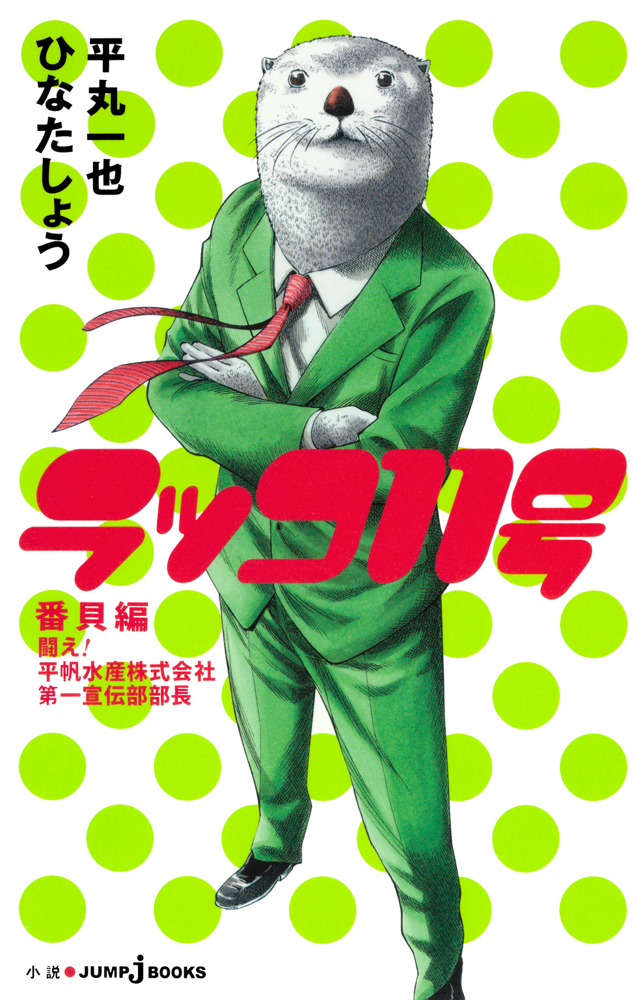
この本は縦書きでレイアウトされています。
また、ご覧になる機種により、表示の差が認められることがあります。
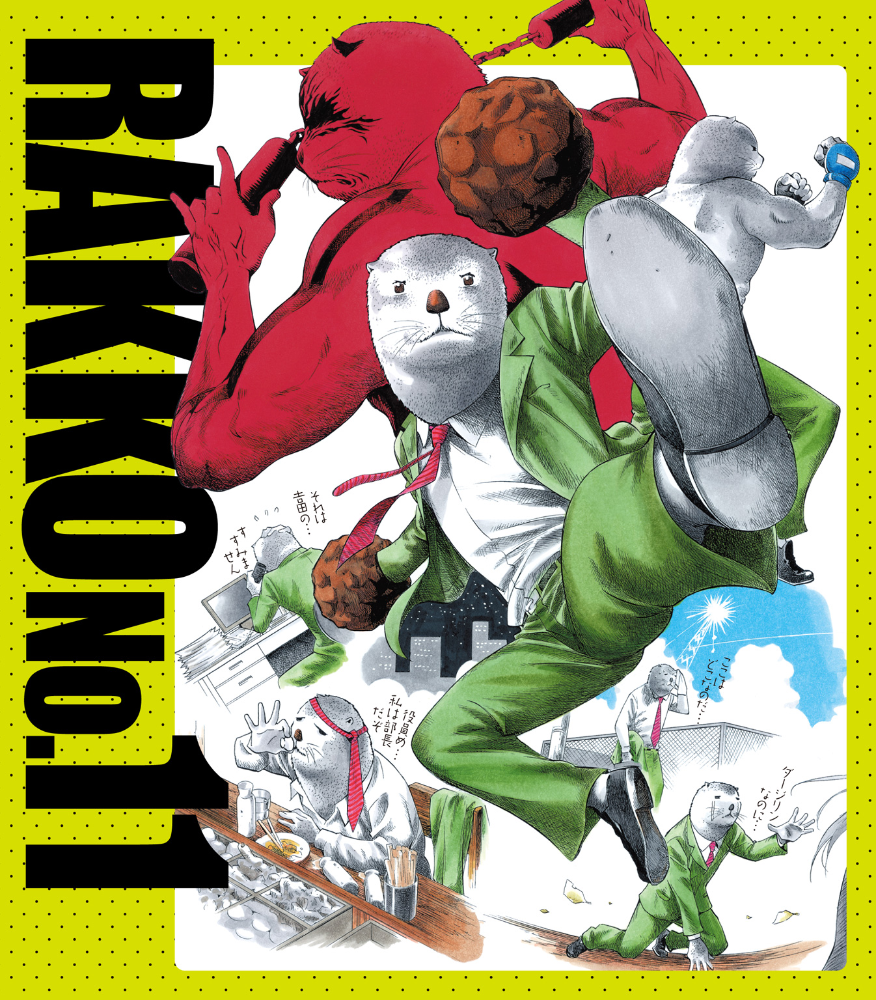
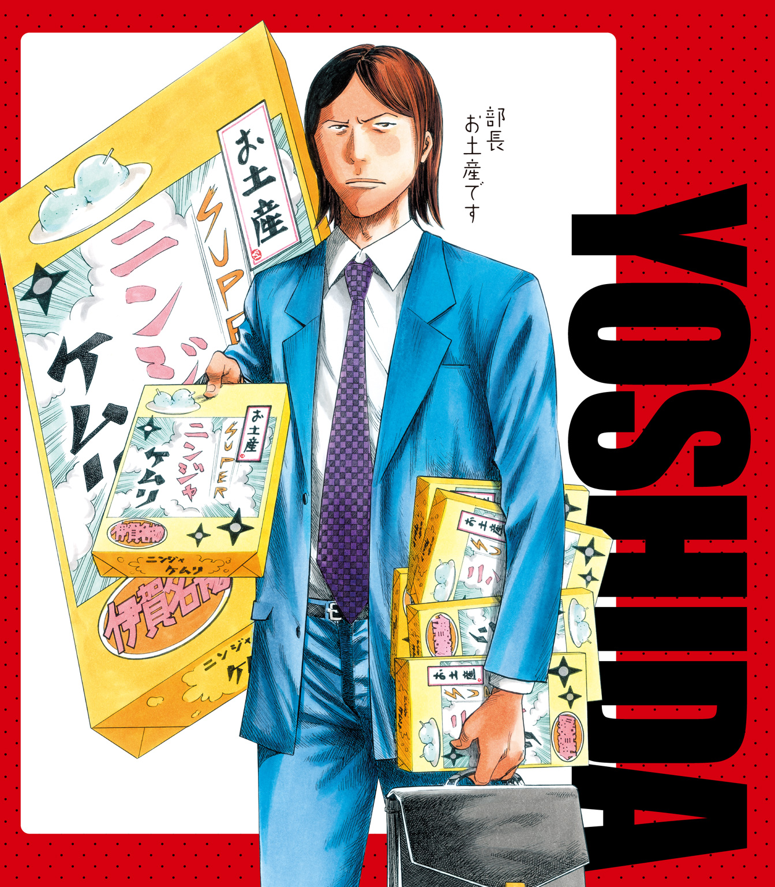
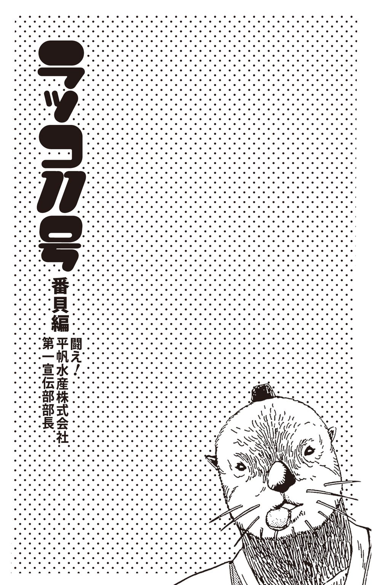
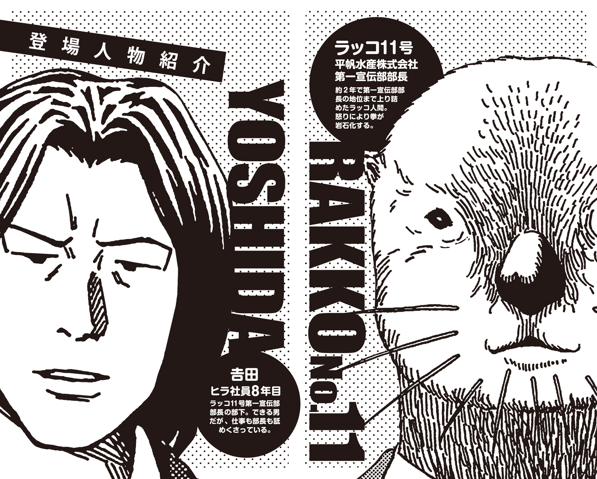
カタカタという規則正しい音を響かせ、私はキーを打つ。キーとは、無論パソコンのキーボードのものだ。画面を見つめながら、一心不乱に書類を作成する私の表情は、おそらく険しいことであろう。
ちらり、とデスクの脇に置かれたぶ厚い企画書に目を落とす。企画書のいちばん上に押された赤字の判が嫌でも目に飛びこんでくる。
判にはこうあった。すなわち――『ボツ』と。
ぎりぎりと歯軋りをしながら、企画書の修正を行う。キーを叩きながら、私は先ほどの会議を思い出していた。
広い会議室には、社長をはじめとして、平帆水産の偉い人たち――役員が集まっていた。偉い人だらけというその様は、まさに圧巻としか言いようのない光景であった。
だがしかし、そこはこのラッコ11号。第一宣伝部部長という肩書きは伊達ではない。私もまた、偉いのだ。部下である入社八年ヒラ社員の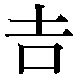田なんぞとは比べものにならないくらいに偉いのだ。よって私は社長や役員連中に囲まれていようとも、堂々と胸を張って立っていた。
私は自身が立ち上げた企画のプレゼンテーションを行っていた。第一宣伝部部長であるこの私自らが出演する『平帆ハマグリパック』のＣＭ。商品の売れ行きが好調なため、ここでさらなるキャンペーンを仕掛けようといった内容のプレゼンであった。
ぱらりと資料をめくりながら、説明をはじめる。
「お手元の資料をご覧いただきたい。期間中『平帆ハマグリパック』をはじめとする対象商品には......うぐっ!?」
「どうしたんだね？」
社長や役員がざわつくが、すぐに私は読み続けた。
「......あ、いえ。た、対象商品には、『ＣＭでお馴染みラッコ部長ストラップ』が付いてくるというのが今回のキャンペーンです。そしてこちらがサンプルです」
すっとテーブルの上に置かれたフィギュアストラップを指し示す。平静を装っていたが、実は私はかなり不機嫌であった。それというのも、資料に『ラッコ部長ストラップ』と簡潔に書かれていたからだ。
資料作成時、私は部下である田に『ＣＭでお馴染み平帆水産株式会社第一宣伝部部長国民的人気ラッコ11号ハイクオリティフィギュアストラップ』にしておけと確かに言ったのだが、いざ手元に来てみればなんたる簡潔さか。これでは私の凄さがまるで伝わらないではないか。田め、どこまでこの私をコケにすれば気が済むのか。
そういったことを考えながらも、怒りに我を忘れることなく、私は順調にプレゼンを続けていった。
「これがそのストラップ......あ、ハイクオリティフィギュアストラップのサンプルです。通常版とシークレットになっています。通常版ではＣＭ時の衣装バージョンやハマグリパックを掲げているバージョンなど全五種、そしてシークレットは可愛い可愛いラッコちゃんパジャマバージョンと、拳を岩石化した企業戦士バージョンの二種で......」
ストラップを手に取り見つめている役員たちに畳みかけるように話し続けていると、ひとりの役員が腕を組んで唸った。
「うーん、なんというかこう、もっとどうにかならないのかね？」
えらく漠然とした質問に、私は苛立ちながらもきわめて冷静に返す。
「と言いますと？」
「うーむ、どうもこう、ラッコらしさが足りないというか、そもそもラッコ部長って一体なんなんだろうという......」
なんなんだろうじゃない！ 私だろうが！ 今お前の目の前にいる私だろうが！
そう叫び出しそうになったのだが耐える。役員の手前耐える。
「やはり、ラッコらしさはもうちょっと必要なのではないかな......」
その言葉に何人かの役員が「うんうん」と頷く。
「もっとラッコの気持ちになって考えてみるというか、ぶっちゃけ今のままだとただキモイだけのような気も......」
「なっ......!?」
あまりのことに、私は言葉を失ってしまう。もっとラッコの気持ちになって考えてみたらどうかとは一体どういうことなのか。ラッコ人間であるこの私が企画立案したものにこれ以上何を求めようというのか。人とラッコを繫ぐ架け橋たる存在である私にラッコの気持ちがわかっていないとは一体どういう冗談なのか。むしろお前らに一体何がわかるというのか。
深々と背もたれに寄りかかりながら、役員が続ける。
「というかね、このシークレットにしてもそうだ。なぜ手が岩石化するのか。まったく意味がわからん。どうしても岩石でなければいけないのか。その明確な理由が欲しいところだ」
「そっ、それはっ、ラッコは、石でッ、ハマグリを、叩き割るからでッ」
ぷるぷると怒りにその身を震わせながら、私は答えた。
「うん。いや、だからね、ラッコが石を使って貝を割るのはわかるよ？ でもこれはラッコ人間なんだろう？ ただのラッコとは違うんじゃあないのか？ そこらへんをもっと整理して、ちゃんと反映させないと、ただのよくわからない人形になってしまうんじゃないか？ だから明確な理由を――」
くどくどと続く役員の弁舌に、私はブチギレそうになる。思わず、「明確もなにも、勝手に岩になるんだからしょうがないだろうがッ！」と叫んで、ズギャーンと拳を岩石化させて殴りかかりそうになる。
だが耐える。役員の手前耐える。
私はポケットに手を突っこんで、サンプルとともに密かに製作しておいた『さわやか役員くん人形』を握り潰すことによって激しい憤りを抑えつけた。
役員は続ける。
「――そもそも、私は最初からラッコ人間の採用には反対だったんだ。ラッコ人間は暴力的で子供の教育にも悪いとＰＴＡからも苦情が来ているしな」
もはやハイクオリティフィギュアストラップの話ではなく、私に対する個人的な見解まで述べだす始末。「それは今関係ないでしょう！」というひと言をぐっと吞みこむ。役員の手前吞みこむ。
だがしかし、思えばこの役員の男――何かにつけて私にきつくあたる。私が企画を出したときだけ、この男がいつも難癖をつけてくるような......。
イライラが募る。気がつくと、ポケットの中で、『さわやか役員くん人形』が粉々になっていた。怒りが、私の拳を岩石に変えはじめていた。ああ、今すぐにでも目の前にある長テーブルを跳び越えて、あの役員を殴ってやりたい。「人類が誕生して以来、最も多くの人間を葬り去った武器は何か知っているか？ それがこれだ――!!」とか叫びながら岩石の拳を振るいたい。いやいや、それはやばい。そんなことをしたらたいへんなことになる。せっかく手に入れた今の社会的地位――平帆水産株式会社第一宣伝部部長という地位を失うわけにはいかない......！
徐々に拳を岩石に変えながら、私がオロオロしていると、すかさずその役員が私の手に言及した。
「おい君！ なんなんだその拳は！ 会議中に手を岩石に変えて、我々を馬鹿にしているのか！」
バン！ と机を叩いて、役員が怒鳴り声を上げる。
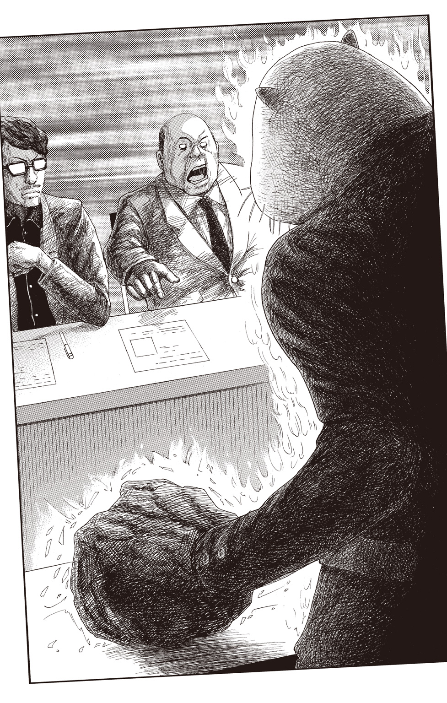
「い、いや、そ、そんなつもりは......私は、そんな......」
その間にも、ビキビキと音を立てながら、拳が岩石に変わっていく。こうなったらこの場にいる人間すべてを殴り倒して――いや、違う。まずはうるさいあの男の脳天に一撃をくらわせて――だからそうでなく。冷静に端から順に頭をカチ割ることを――ああああ。
私の中で、獣の部分と人間の部分が今まさに激しいせめぎ合いをしていた。頭に血が上り、もはやどうしていいのかわからなくなる。
そして――
私は左手で自分の頭を殴りながら、右手を口の中にねじこんだ。
「ンンンンンッ！ 私はンーッ！ 私はンーッ！」
ボカボカと自分の頭を叩きながら、「ン」をゲシュタルト崩壊させる勢いでもって拳に齧りつく。
「私はンーッ！ 私はンーッ！ 私はンーッ！」
勝った......人間の部分が勝利した......。さらば野性。ありがとう理性。
「な、なんなんだ、ぷふっ、君はっ！」
先ほどまで怒鳴り散らしていた役員が、私の様子に笑いを嚙み殺して顔を背けた。見ると、他の役員も皆、顔を背け、あるいは俯きながら小刻みに震えていた。
場の空気が、一瞬にして和やかなものに変わる。
「まあまあ、ラッコ人間もユーモラスでいいじゃないですか」
怒鳴っていた役員も、周囲からそうなだめられては、これ以上強くは言えない。いつの間にか、私の拳も元に戻っていた。
すべてが、順調であった。
「まあ、この企画は普通にボツにするがね」
「え？ そ、そんな......っ！」
役員がハンコを振り下ろした。
以上、回想終了。
部屋には、カタカタというキーを打つ音だけが響いている。第一宣伝部部長ということで偉い私のデスクは個室にあった。それ相応の社会的地位に就く者にしか許されない個室のオフィス――それがこの部屋だ。
しかしあの役員――思い出すだけでイライラしてくる。なぜ私がこれほどまでに企画を修正しなければならないのか。ガチャガチャとキーを叩く。そもそも、こういうのは部下である田の仕事なのではないのか。田は一体どこにいるのだと訊ねると、誰もが出張ですと答える。くそう田め、どうでもいいときはいるくせに、肝心なときに限っていつもいない。それがあの田という男なのだ。「ハー、ハー」と怒りで呼吸を荒くしながら、私はおそらく血走っているであろう目でもって、画面を睨みつけながらキーを打ち続ける。
そして――その怒りが私の拳を変える。
「うおおおおお、やってられるかああああ！」
バキャン！ とタイプした文字が弾け飛び、キーボードが破壊される。岩石と化した拳では、タイピングなどできやしない。
「あああダメだああああ！ 人をっ、人を殴りてえっ！」
頭を抱えて、叫ぶ。
「だがしかし、ダメだ......！ 社内で騒ぎを起こせば、クビが飛ぶ危険性がある......」
こつこつと積み重ねてきた今の社会的地位――どんな人にも誇ることができ、馬鹿にされることのない平帆水産株式会社第一宣伝部部長という今の地位を失うわけにはいかないのだ......。
「落ち着け私......鎮まれ獣の私......」
シュウウウ......と岩石の拳が人間の手に戻る。そうだ、仕事だ。仕事を続けるしかないのだ。今、私のやるべきことはそれしかない。
再びカチャカチャとキーを打ちはじめる。ちらり、ちらり、とデスクの脇に置かれた企画書に目を落とす。
バキャン！ と文字が弾け飛ぶ。
「ぐわあああ打てねえええええキーが全っ然打てねえええええええ！」
拳を岩石に変化させ、私は悲鳴を上げて立ち上がった。そしてうなり声を上げながらパソコンの側面や背面を素早く確認した。確認しているうちに手は元に戻り、しばらくして目当てのカスタマーセンターと書かれたシールを発見する。デスク備え付けの電話を手にし、私は勢いよく書かれた番号をプッシュした。
呼び出し音が鳴る。呼吸を整えながら待つ。呼び出し中だ。イスに腰かけ、時計を確認しながら待つ。混み合っているのだろうか、電話はなかなか繫がらない。ひたすらに待つ。手の甲がビキビキと岩石に覆われてきた。ぶるぶると手が震えだす。まだまだ待つ。発作が始まった。この世のありとあらゆるものを殴りたくてしかたなくなってくる。
「うおおおおなぜ出ないんだあああああああああ！」
ぶん、と電話を投げ、壁に叩きつける。その瞬間、『もしもし。もしもし？』と声が聞こえた。
「そうかっ、衝撃を与えたから繫がったのか！」
ハアハアと呼吸を乱しながら、慌てて受話器を拾う。私は一気にまくしたてた。
「もしもし私だ！ 手が岩石化しても打てるキーボードを開発しろ！ 今すぐにだ！」
受話器の向こうがしばし無言になったかと思ったら――ブツッ、と切れた。
「ぬわああああああ！」
ぶん、と再び電話を投げつける。
「あ、ありえねー。いたずら電話だとでも思われたのか？」
もう一度かけ直してきちんと用件を伝えようと受話器に手を伸ばすも――
ガッ！ ガッ！ ガッ！
「拾えねえっ！ 手が岩石だから拾えねええええええ！」
あまりにもイライラしすぎたのだろうか、私の手は岩石に変化したまま戻らなくなってしまっていた。
「い、いかん、落ち着け......！ 落ち着くのだ私。このままでは週刊少年ジャンプも読めなくなってしまう......」
ぷるぷると震えながら、私はリラックスするためにデスクの上のティーカップに手を伸ばす。中身はもちろん紅茶である。私は紅茶の味には少しばかりうるさいラッコ人間であった。
しかしこの手は、触れるものすべてを破壊する。当然のことながらカップは割れ、中身が床にぶちまけられた。
「ああっ、高級なカップだったのに！」
高級品を破壊してしまったという絶望感が、床がびしょびしょになってしまったというさらなる怒りが、ごちゃ混ぜとなって私の拳をよりいっそう強固な岩に変える。
「だ、ダメだ......な、なんとかして冷静にならなくては......っ！」
壁に掛かる絵画を眺めて心を落ち着けることにする。芸術は、ラッコ人間の心を豊かにするのだ。
そうだ、この絵を見ていると思い出す。
駅前で美しい女性に声をかけられたあの日のことを......。
導かれた画廊......。そこで出会った運命の作品......。
芸術を見る目があると女性に褒められ現金一括払いで購入したこの絵画......。
二百万ほど払い嬉々として会社に持ち帰り飾ったこの絵画......。
ネットで調べてみるとまったく価値がなかったこの絵画......。
「これ騙されて買ったやつ――!!」
ギョイーンと拳を繰り出して、絵画ごと壁を凹ませる。
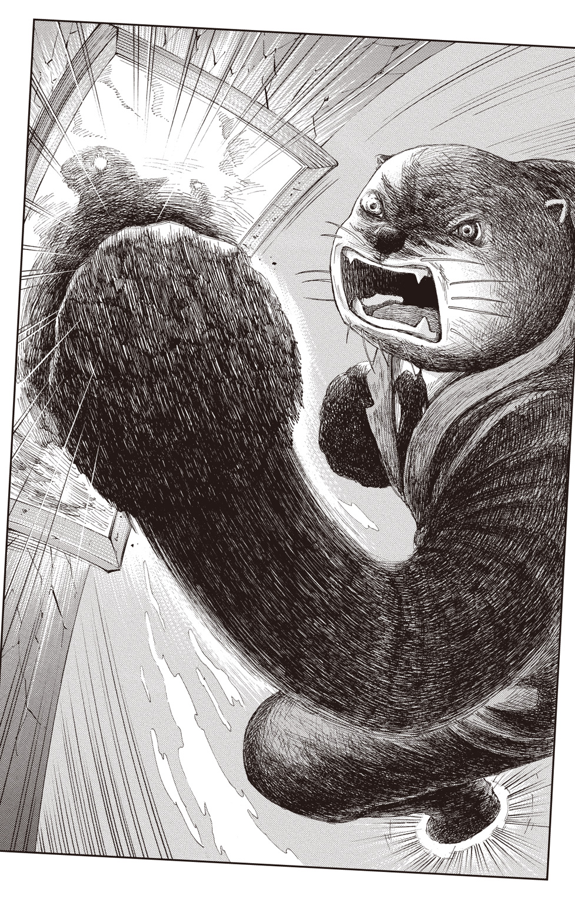
「うわあああああもうダメだもうダメだああああああああああああ！」
モギャーンとさらに拳を繰り出して部屋の中を破壊する。
「外にッ、あああああああ外に出れねええええええええ！」
岩石と化した両手でドアノブをガチャガチャとやって、
「斑岩ー!!」
岩の名を叫びながら拳を炸裂させる。
轟音とともに、ノブごとドアが吹き飛んでいった。
個室から飛び出した私は、荒ぶるラッコ人間と化して叫んだ。
「田ァーッ！ 田はどこだあああああああ！」
書類を抱えて通りかかった女子社員が、びくっとおののきながらも「田さんなら出張に......」と教えてくれる。
「なぜいない田ァーッ！」
「だから出張......」
岩石に変化させた拳を振り回しながら叫んでいると、警備員が駆けつけてきた。
「ラッコ部長！ お、落ち着いてください！」
「違うッ！ 私は平帆水産株式会社第一宣伝部部長だ！ なにが社長だ、なにが役員だ！ 部長に逆らって生きていけると思うなよッ！」
「ほ、ほんとに落ち着いてください！ 何を言っているのか意味がわかりませんから！」
叫び暴れる私を数人がかりで押さえこもうとしてくる。だが、そうはいかない。もはや殴らねばこの拳は収まりがつかないのだから......！
「待っていろ......役員連中め......！」
がばっと、私はそこで飛び起きた。
ハア、ハア、と荒い呼吸のまま、今の状況を確認する。場所はマンションの一室――自室のベッドの上。部屋の中も、窓の外もまだ暗い。
いつの間にか眠ってしまったらしい。記憶が曖昧だが、ちゃんと可愛い可愛いラッコちゃん柄のパジャマを着用していた。もちろん先端に丸い飾り玉の付いたナイトキャップもしっかりとかぶっている。いつもの就寝スタイルであった。
「ゆ、夢......？」
寝汗が冷えていくことを感じながら、私は自身の手のひらをまじまじと見つめた。薄暗い部屋の中でも、その手が岩石化していない人間のものであることがはっきりと視認できた。ひっくり返してみても、どこも岩石化していない。
「なおった......？ いや、よかった、はじめから全部夢だったのか......」
はあ、と溜息をついて、再び横になる。かさりと手に何か触れた。
「.........？」
くしゃくしゃになった紙である。何かと思い開いてみると――
そこには赤々と『ボツ』の文字が。
「ゆ、夢じゃない......っ！」
ガタガタと震えていると、やがて窓の外が明るくなってきた。何があろうとも、日はまた昇る。寝ても寝なくても、私は出社しなければならないのだ。
――もうやだ......今日もまた、行きたくない......。
頭から布団をかぶり、私はさめざめと泣いた。
苛立ちの昼休み
雨の日でもない限り、昼休みはたいてい屋上で過ごすことにしている。
朝から晩まで壁に囲まれていては息が詰まる。せめて昼食くらいは、青空の下でのびのびと食べたいというもの。
時計を常に確認し、まだか、まだかと、誰もが待ち望む昼休み。すなわち、昼休みとは、救いなのだ。
仕事は、つらい。嫌で嫌でしょうがない。そんなとき、昼休みがいつも私を救ってくれる。昼休みが訪れたときの解放感は、なにものにも代えがたい。昼休みがあるおかげで、私は今日もまた生きていけるのだ。
チャイムが鳴り響く。さながらそれは救済の鐘の音。昼休みの到来が告げられた。じっと時計を眺めながら待っていた私は、チャイムが鳴るか鳴らないかのうちにすぐさま持参した弁当を手にして屋上へ向かった。昼休みが訪れたからには、こんな仕事部屋になど一秒たりともいたくはないからだ。私は今まさに自由なのだ。
階段を二段飛ばしで駆けあがり、屋上に辿り着いた私は、すぐさま空いているベンチに腰かけた。ぐずぐずしていては、女子社員の集団に席を取られてしまうからだ。屋上の神――すなわち屋上神を自負する私にとって、ベンチの確保は必須項目であるとすら言える。今日もまた、一番乗りで屋上にやってきた私は、余裕をもってベンチを確保するのである。常に一番乗り。これだけは譲れない。負けられない闘いが、ここにあった。
ベンチに腰を落ち着けて、傍らには天然水のペットボトルを。これでいつもの食事スタイルが完成だ。大量に安く売られていた天然水は非常に重宝する。ありがたい。
さっそく昼食タイム――まず最初に、ペットボトルの水をひと口。口を湿らせる。このとき注意することがひとつだけある。それは飲みすぎないことだ。いくら喉が渇いていても飲みすぎない。水は食後にのんびりと――これが私の信条である。それに食べる前にたくさん飲むと、胃液が薄まるような気がする。
さて、口を湿らせたらここからが本番だ。いよいよこれから、水を飲まず怒濤の勢いで完食まで駆け抜けるラッコ人間の昼食が始まるのだ。いただきます。
ひと口大のビフテキを頰張り、白い飯をかきこむ。肉と米......これほどまでに相性のいい組み合わせがほかにあるだろうか。今日は和風の味つけにしてみた。おろしポン酢が米によく合う。
ご飯の上にのせた梅干しを囓り、梅肉おろしポン酢味の完成だ。米が進む。
もふもふと米を頰張りながら、建ち並ぶオフィスビルの頭と、遥か彼方にある真っ白い雲を見つめる。青空に大きな大きな入道雲。ああ、やはり屋上はイイ。
私が弁当箱の中身を半分ほど胃に入れる頃には、すでに屋上はたくさんの社員たちで賑わっていた。米を頰張りながら、私は近くのベンチに座る女子社員の会話に聞き耳を立てた。というか、勝手に聞こえてきたのだが、内容が内容だけに、つい聞き耳を立ててしまった。
彼女らは、どうやら私の弁当箱の中身について話しているようであった。私には聞こえていないと思っているのだろうが、声が大きい。丸聞こえであった。人が何を食べているのかでなぜそこまで盛りあがれるのかはなはだ理解に苦しむが、彼女たちの会話を聞きながら、私は怒りに打ち震えていた。
それはつまり先入観だとか固定観念といった類のことで、偏見とも言えるかもしれないし、そうに違いないという凝り固まったイメージに囚われていると言ってもいいだろう。
あえてわかりやすく喩えるのならば、猿はバナナが好きに決まっていると、猿はバナナしか食べないのだと、そう彼女たちは言っているのだ。
そんな馬鹿な話があるか。日本にはそもそもバナナがなかったのだ。日本の猿は、では一体今までどうしていたというのか。おおかた、マンガだとかアニメだとかゲームだとかでそういった場面を目にしたのだろうが、当たり前だが猿はバナナ以外も食べるし、必ずしもバナナを食べなければならないというわけではないのだ。
考えるに、これはある意味常識という名の支配である。単純に、視野が狭いのだ彼女たちは。そうに違いないと思いこみ、決めつけ、そんな自分の考えを、露ほども疑わない。そう信じこんでいる。ステレオタイプな考えに縛られているのだ。
ああ、不愉快だ。ひどく不愉快な気分だ。文句のひとつでも言ってやりたい。でも言えない。私は言わない。ただ黙って米を食う。黙って米を食うしかないのだ。
すぐに、彼女たちの興味関心は別の対象に移った。同じ部署の誰々さんが、今話題のドラマに出ているイケメン俳優に似ているなどというどうでもいい話が始まった。
それを聞きながら、私は無言のまま弁当の残りを食べ終える。むしゃむしゃしていた。それと同時にムシャクシャしていた。テキパキと弁当箱を片づけ、じゅるると天然水を胃に流しこみながら、思う。
ラッコはハマグリ以外も食べるのだ、と。
そして私はラッコ人間。ただのラッコとは違うのだ。ビフテキを好んでなにが悪い？
まったく、あの女たち......どうせその髪型も今人気のモデルとかを真似しているに違いないのだ。持っているポーチはブランド物か......どうせ雑誌の付録に決まっている。あれは付録に釣られて雑誌を買うタイプだ。そういう顔をしている。そしてとりあえずブームだからという理由でヨガやピラティスを習い始め、テレビや雑誌の謳い文句に踊らされていることにも気づかずにお洒落な自分に酔いしれている、そんなパターンだろう。
そういうやつだからこそ人を――いや、ラッコ人間を見た目だけで判断するようになってしまうのだ。やれやれ、まったく、本当にいい加減にしてもらいたいものだ。
人を見た目で判断するなと声を大にして言いたいよ、ホントに。
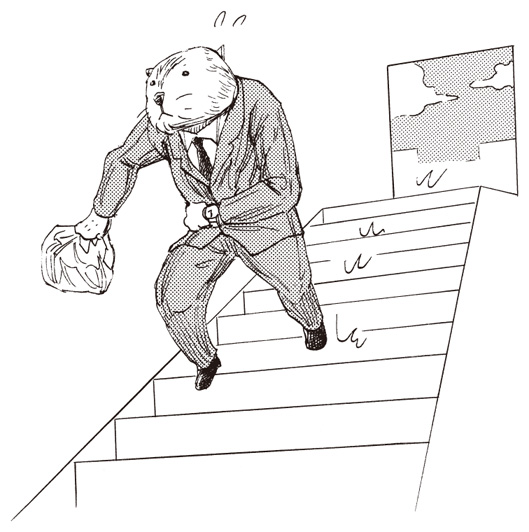
熱を帯びたアスファルトが、靴底を焼いていた。
まるで、じっとしていては靴が溶けてしまうと言わんばかりに、ここでは誰もがせわしなく歩く。
人と車で溢れかえる昼下がりのオフィス街は、暑い。街路樹から降りそそぐ蟬時雨が、その暑さをよりいっそう際立たせていた。
営業回りの最中、ひとり足を止めた私は、目を細めながら空を見上げていた。無数の高層ビルによってぽっかりと切り取られた青い空。ガラス張りのビルから降りそそぐ反射光が眩しい。美しい見た目とは裏腹に、ビルはさながら凶悪な兵器であった。残念ながら、彼方にある大きな入道雲も、太陽を隠しそうにない。容赦なく照りつける太陽光と、壁面より降りそそぐ灼熱の反射光が人と大地を焦がす。そんな悪夢のようなダブルコンボは、まさに道行くすべての人をクールビズへと誘う恐るべき兵器であった。
大都会――人類は、常にそんな兵器に包囲されて生きている。
私は熱の島――すなわちヒートアイランド現象について思考する。
乱立する高層ビル群は、風の流れを遮り、コンクリートで固められた街は熱を溜めこむ。さらには、あらゆる建物がエアコンの室外機より熱風を撒き散らし、街の温度を上昇させる。それはもはやダブルコンボどころではない。暑いから冷房を入れると、またさらに街全体が暑くなるという無限コンボが成立してしまっている。そして、この暑さは日が落ちてからもやわらぐことはない。
人工物の多い都会は、その熱を放出することができない。熱は、こもるいっぽうだ。一日中炎天下に晒されたアスファルトは、夜になっても決して冷めることはない。すなわち、熱帯夜が訪れることになる。ようやくアスファルトが冷めてきた頃にはまた日が昇り、再び燃えさかる太陽が牙を剝く。
そう――無限ループである。もはや人類に逃げ場はない。四六時中暑い。毎日暑い。イライラするくらい暑い。あまりにも暑いので、誰もがイライラしてくる。つらい仕事を終え、ようやく家に帰ったとしても、暑くて眠れない。睡眠不足なうえに暑いので、さらにイライラしてくる。人々がイライラしてくると犯罪や事故が増える。些細なことでケンカになる。ダージリンかアールグレイかでケンカになる。なにがアールグレイだ。適当なことばかり言いやがってとケンカになる。それもこれもすべて暑さのせいである。暑さ恐るべし。
このままでは人類はやがて滅びるだろう。滅びるレベルの暑さだと私は考えていた。だからこそこうして真剣にヒートアイランド現象について思考しているのだ。住みよい社会にするにはどうしたらいいのだろう。一個人が――ではなく、街、そして地球のことまで視野に入れて考える。グローバルな視点に立って考える。
考えるのだ......。人と社会について。暑い。
感じるのだ......。地球の声を。暑い。喉が渇いた。
「あっ、ラッコ11号だ」
「本当だ。やっぱり本物はキモイな～」
道行く人が、私を指差して言う。確かに私は、顔はラッコ、身体は人間のラッコ人間だ。あらゆる岩石に変化させることのできる拳でもって、さながらラッコが石を使って貝を叩き割るように、世に溢れる有象無象を叩き割ることのできる存在である。だがしかし、私がラッコ人間であることなど、連日の猛暑にくらべれば些細なこと。私は気にせず思考を続ける。
今、私がすべきことは何か......。あああ暑い暑い喉が喉があああああ。
「ふう......」
あまりにも暑いので、自動販売機で冷たい紅茶でも買おうという結論に落ち着く。もはや営業回りどころではない。ヒートアイランド......人の業が生みし熱の島よ......。お前は暑い......。
すぐに自動販売機を見つけた私は、スーツのポケットから硬貨を取り出した。
カチャカチャと硬貨を投入しながら、私は日本の治安について考えはじめる。犯罪が多く治安の悪い国では、自動販売機は置けないと以前どこかで聞いたことがある。犯罪者にとって、自動販売機などというものは、無防備に置かれたお金の詰まった箱なのだという。
その点、日本は良い国だ。もし日本の治安が悪ければ、この自動販売機も存在しなかったかもしれない。この自動販売機が存在しなければ、私は喉を潤すことができないだろう。もしここで、私が喉を潤せなかったとしたら、一体この国はどうなってしまうのだろう。そんなことを考える。
自動販売機で飲み物が買えずにあまりにも暑くて喉が渇いてイライラした私を含む国民全員が、勢いあまって何かのはずみで犯罪者になってしまう可能性もなきにしもあらず。それはまさに憎しみの連鎖。渇いた者たちによる反逆がはじまってしまうかもしれないのだ。
ヒートアイランド現象と自動販売機がこのようなカタチで密接に繫がっていることなど、多くの国民は考えもしないだろう。しかし、私が考えているからこの国は――いや、この惑星は、まだ大丈夫だ。
ちんすこう――いや、沈思黙考しながら光るボタンをプッシュする。やはりここは『ゴゴゴの紅茶』だろう。『ゴゴゴの紅茶』は素晴らしい。私は紅茶の味には少しばかりうるさいラッコ人間であった。
ガシャコンと出てきた缶を取りあげる。恐ろしいくらいに冷えている。暑さでクラクラしている私は、すぐさま缶を開けるとその中身を吸いこむように喉の奥へと流しこんだ。
すっきりとした味と香りが喉の奥へと駆け抜けていく。火照った身体に、アイスティーが染みわたる。全身の細胞ひとつひとつに染みわたっていく。
「ぷはっ、う、美味い！ やはり『ゴゴゴの紅茶』は美味い！」
ひんやりとした喉越しに涼を感じながら、私は冷たい缶を天に向かって掲げた。人とラッコにやさしい味――それが『ゴゴゴの紅茶』だ。すなわちラッコ人間たる私にとっては二倍のやさしさとなるのがこの『ゴゴゴの紅茶』なのだ。
ずずず、とアイスティーを啜る。いつの間にか暑さは消え失せていた。
「う、美味すぎる！ なぜこんなにも美味いのだこの『ゴゴゴの――」
だが――
「な、なにっ!? こ、これは『ゴゴゴの紅茶』ではない！ 『何処の紅茶？』ではないか！」
はっ、と自動販売機を確認する。『ゴゴゴの紅茶』の隣に置かれた『何処の紅茶？』。暑さで朦朧とするなか、似たようなデザインをしていたため間違えたのだ。
「紛らわしいデザインを......！ お、おのれ......。そしてなぜ疑問形なのだ？ なぜ私に問うのだ？」
気がつくと、缶を持つ手がわなわなと震えていた。思わず拳を岩石に変えて自動販売機を殴りそうになる。が、思いとどまる。もはや喉が渇いていたあの頃の私とは違うのだよと心の中で勝ち誇る。暑さでイライラしていた昔の自分にグッバイ。これからはクールなラッコ人間の時代だと確信する。
それに......
「これはこれで美味いから、まあ、いいか......」
じゅるるる、と再びアイスティーを喉に流しこむ。世界は平和だった。少なくとも、今この瞬間までは。
後方より、突如として響きわたる怒声。何事かと私が振り返るのと同時に、近くのコンビニから何者かが飛び出してきた。「ああっ」とその姿に、私は目を奪われる。
バッグを抱え、走るその姿。一瞬、目の前に鏡があるのではないかと錯覚してしまうほどにそっくりなその顔。それはまさしくラッコの頭部。私以外のラッコ人間の姿が、そこにあった。
いや、違う。
それは覆面。ラッコを模したかぶりもの。私によく似たラッコの覆面をかぶった男が、全速力で駆けてきたのだ。
「邪魔だっ、どけっ！」
「うおっ!?」
覆面の男が、私を突き飛ばして走り去っていく。私はバレリーナのように回転した。なんという悲劇。
しかし、悲劇は、とどまるところを知らない。
「ああっ!?」
つるん、と手から缶が滑り落ちる。水滴を纏った缶が、ゆっくりと落ちていく。鈍い音を立てながらアスファルトに激突する缶。転がりながら、ドクドクと中身のアイスティーをぶちまける缶。熱せられたアスファルトと、冷たいアイスティー。ジュウウウ、とアイスティーが蒸発する音が聞こえた。
私は愕然とした。
「な、なんてことを......！ まだ、何処の紅茶なのかわかっていなかったのに......！」
ぶるぶると、身体が震えだす。当然だが、寒いわけではない。むしろ暑い。冷たい缶を手放したことによって、むしろ先ほどまでよりも暑くなってきたような感じさえする。この震えはそう――怒りによるものだ。
「ううっ、ぶ、ぶつかっておいて、謝罪の言葉もないのか！」
ブチィッ、と何かが切れる音がした。いや、むしろこれはブチギレた音だ。
「暑いからといって喫茶店などに入ることもなく慎ましやかに自動販売機の前で涼んでいるラッコ人間を突き飛ばした挙げ句その手に持つ缶の中身までぶちまけておいて弁償はおろか謝罪のひと言もないうえに『邪魔だっ、どけっ！』ってなんだ!!」
マグマのように溢れ出る怒りが、この手を変える。拳がビキビキと音を立て、岩石に覆われていく。
「ああああもうダメだ暑い！ イライラする暑い！ うおおおおおお暑い！」
ハアハアと呼吸が荒くなる。ダラダラと汗が垂れてくる。もう、我慢の限界であった。
「橄欖石ソレアイト――!!」
叫び、岩石と化した拳でズギューンと空を切る。しかし、これだけではもはや私の怒りは治まらない。
――よし、あの男の頭をこの手でカチ割ろう......。
イライラが頂点に達した私は、瞬時にそう決意する。ならば、すぐさま行動開始だ。怒れるラッコ人間は、もう誰にも止められない。
ドン！ と背中にタックルを受け、私は前のめりに倒された。
止められた。
「ぐっ、な、何をするっ!? そして熱い！ 大地が焼けるように熱いいい！」
突然のことに、私は混乱しながら叫んでいた。見るとコンビニの制服を着た若い男が、鬼のような形相で私を押さえつけているではないか。
「つ、捕まえたぞ！ 大人しくしろこの未確認生命体野郎！」
じたばたする私を押さえつけながら、男が叫んだ。
「今警察を呼んだ！ 逃がさないからな！」
「なぜだっ......なぜラッコの顔をしているだけで警察を――」
そこで私はハッと気づく。先ほどのラッコ覆面の男。バッグを抱え、全速力でコンビニから飛び出してきたあの男。
「――コンビニ強盗......か......？」
そもそも、考えてみれば覆面をつけて店に入る人間が、一体どこの世界にいるというのか。間違いない。あの男は、コンビニ強盗だったのだ。そうして、急ぎ逃走を図った際に、私にぶつかったのだ。
そこで私はさらに気づく。私が今こうして取り押さえられているわけ。男がかぶっていた覆面は、私によく似たラッコの覆面であった......。
いつの間にか、流れる汗は冷たいものに変わっていた。
「ち、違う！ わ、私はたまたま通りかかっただけで......」
「噓をつけ。そんなラッコのような顔をした人間がそうそう何人もいるわけがないだろう」
「なぜ信じてくれないんだ！ はっ!? まさかまさか、貴様！ 田ではあるまいな？」
慌てて私は男のネームプレートを確認する。そこには、あってはならないあの文字が。
【よしだ】
「そうか、やはりそうか......やはり田か......」
ふう、と私は溜息をついた。
「田はいつもそうだ......田は常に私を疑う......」
「いや、初対面だからな？ というか、なれなれしいんだよ！」
ぎゅむっと、押さえつけられる。
「うっ、放せ！ 誤解なんだ！」
「なにがゴカイだ。今は釣り餌の話は関係ないだろう」
「やはり田！ そのセンスが駄目！」
「うるせえんだよ犯罪者が」
コンビニ店員・田によって私はさらに力いっぱい押さえつけられる。
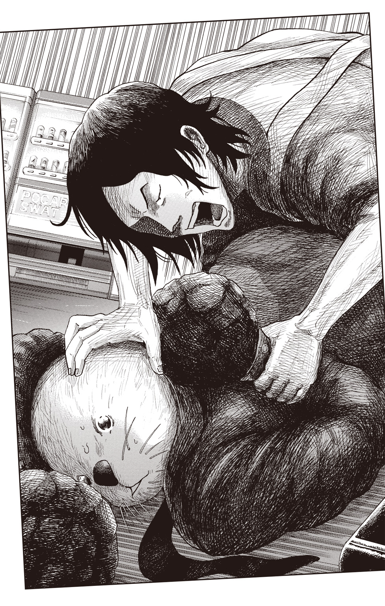
騒ぎを聞きつけて集まってきた野次馬に、田が叫ぶ。
「みなさん聞いてください！ こいつは強盗犯です！ バイトの女の子を脅して、レジからお金を持ち出したのです！」
「違う！ 私じゃない！ やめろ田ァーッ!!」
私の声は、しかし届かない。口々に私を非難する言葉が飛び交った。
「なにぃ？」「なんて野郎だ」「ラッコみたいな顔しやがって」
「くっ、うぐ......！」
あまりの悔しさに奥歯を嚙み締める。こうなってはもう言い訳は通じない。そもそも、田という存在が、私の言い訳を聞いたためしがない。過去に前例がない男なのだ田は。
沸々と怒りがこみあげてくる。こうなったすべての原因はあの男にある。私に酷似するラッコの覆面をかぶり、強盗などという凶行に及んだあの男。ぶつかっておいて謝罪もなしに、むしろ暴言を投げかけ走り去っていったあの男。『何処の紅茶？』が何処のものだかわからなくしていったあの男。
「ゆ、許せん......。おのれ、ニセモノめ......！」
あの男を捕まえさえすれば、私にかけられた疑いも晴れるというもの。捕まえて、身の潔白を証明するのだ。青天白日の身となるのだ。あとついでにこの手で血祭りに上げてやるのだ。
もともと、殴る予定だった男。好都合だ。
そうと決まればやることはひとつ！
「くらえ」
背筋を駆使して、私は身体を思いっきり仰け反らせた。そうして、そのまま田の鼻先に後頭部を押し当てる。
「うっ、獣くさっ!?」
田の拘束が緩む。私はその隙を見逃さない。すぐさま起きあがる。
「ふはは、覆面と本物のラッコ人間の違いを思い知るがいい」
高笑いしながら、私は駆けだした。
「ま、待てっ！ オエエエッ」
ラッコスメルに嘔吐きながらも、根性の人・田が追いかけてくる。周囲にいた連中もまた、私を追いかけてきた。
ここで捕まるわけにはいかない。全速力で走る。具体的に言うと手のひらをパーにして思いっきり振りながら走る。効果音をつけるとしたらドドドドドという勢いで走る。
そして――
「いた！ あいつだ！」
ほどなくして、私は前方に例の男を発見した。すぐに警察が来ると踏んでいたのだろう。必死になって走る男は、いまだラッコ覆面を装着したままであった。いや、逃走中に顔を見られるのを恐れたのか。なるほど、確かに、あの覆面姿のインパクトは凄まじい。誰しもが目を奪われる。目立つが、だがしかし、逆にきっと目撃者はラッコ覆面のことしか覚えていないだろう。
目立つことによって逆にそれ以外の、たとえば声や身長、服や靴などその他の目撃情報を減らすことができる。なかなかうまいやり方だ。
このまま店から距離を取り、落ち着いたところで覆面を外すのだろうが、そうはいかない。覆面を取るその前に、岩石に変えた私の拳をくらわせてやる。
「止まれそこの男ォオオオ！」
そんな私の声に振り返った男といえば、
「な、なんだ!? 恐ろしい形相で叫びながらラッコ人間が猛追してくるっ!?」
警官が追ってきたとばかり思っていたのだろう。そんな男にとって、私のようなラッコ人間の追走はかなりの予想外であったらしく、尋常ではないほどに慌てふためいていた。
しかし、その様子に私の怒りはさらに増す。
「ぶつかって紅茶をぶちまけたくせに私の顔も覚えていないというのか！ 許せん！ 止まれ貴様！ とりあえず落ち着け！ 落ち着いて私の話を聞け！ なにもしないから止まれ！ 殴るから止まれ！」
「どっちなんだよっ!?」
「いいから止まれ！ 止まらないと殴るぞ！」
「わけがわからん！ だが、ここで『はいそうですか』と止まるわけにはいかない！ 逃げきってやる！」
男のスピードがアップする。くそう、なぜ止まらないんだあの男は。
そんな私の後ろから、田たちが追いかけてくる。
「ラッコ狩りのはじまりだ！ 逃がすな！ 追えええ！ 追ええええ！ オエエエエッ!?」
田はまだ嘔吐いていた。しかし、嘔吐く田を追い抜かして、先ほどの野次馬たちが追いかけてくる。
そして、痺れを切らした野次馬たちは、私に向かって次々とモノを投げつけてきた。空缶や紙屑、週刊少年ジャンプなどが続々と飛来する。
「やめろ！ モノを投げるんじゃない！ 特に週刊少年ジャンプはやめろ！ 投げずにアンケートハガキを投稿してくれ！」
走りながら私は叫ぶ。そんな私を通り越して、足下に空缶が転がった。
「ああっ、こ、これは!?」
投げつけられたそれは、あの『何処の紅茶？』であった。まさかこんなところで、運命的な再会を果たすことになるとは......。
「そうだ！ これでもくらえ！」
走る勢いはそのままに、私は足下に転がったその缶を全力で蹴った。かくして『何処の紅茶？』缶は、一直線に、それこそ吸いこまれるかのように逃げるラッコ覆面の男の後頭部に激突した。予期せぬ攻撃に「ほんぎゃあ」と叫んだ男は、そのまま足をもつれさせてバターンと勢いよく転倒した。
大地を蹴った私は、すぐさま男との距離を詰める。
「何処ティーのカタキー！」
宙を舞う私の拳が変わる。燃えさかるマグマのように激しい怒りが、この手を変える。
「斑岩ー!!」
岩の名を叫び、転倒した男に向かってギョバーっと拳を振り下ろす。
「ヒィッ!?」
ズガン！
拳が、コンクリートを穿つ。先ほどまで男の頭部があった場所を穿つ。
「ちっ、ジタバタと......。いいか、動くなよ。動いたら今度こそ本当に殴る」
「う、動かなかったら......？」
「殴るに決まっているだろ？ 一体何を言っているんだお前は？」
「ひぃぃ、た、助けてっ!!」
男が慌てて起き上がるが、すでに周囲は多くの人によって取り囲まれていた。田with野次馬のみなさんが追いついたのだ。
もはや男に逃げ場はない。私にもないが。
あたりは騒然となった。
「ああっ、ラ、ラッコ人間がふたり!?」
「い、一体どっちが本物なんだ!?」
大袈裟なリアクションを取る野次馬に、私は言う。
「明らかに覆面！ あちらがニセモノに決まっているだろう」
「ほ、ホントだ！ 今しゃべったほうが明らかにリアルでキモイ！ 彼が本物だ！」
あれ、なんだろう？ ビキビキと拳が岩石に覆われていく。いや落ち着け、今関係のない野次馬を殴ったら、なんか私のほうが悪いみたいになって状況が不利になるだけだ。
「じゃ、じゃあ、一体どっちが強盗犯だっていうんだ!?」
「いや、それも明らかにあっちだろ。バッグ抱えてるし。ていうか、お金ハミ出してるし」
「ほ、ホントだ！ 慌ててファスナーを閉めたのかお札が挟まってしまっている！ そしてやっぱり見れば見るほど本物のラッコ人間はキモイな～！」
ああダメだ殴りそう......。私の理性よ、今は耐えてくれ！
「ち、ちくしょう！」
たくさんの人に囲まれ、もはや逃げ場を失ったラッコ覆面の男は、ポケットから折り畳み式のナイフを取り出した。
「ふう......そんなもの、この岩石の拳で粉砕するだけだ」
男のあまりに短絡的な行動に、私は「やれやれ」と首を振った。
しかし――
「きゃあ!?」
あたりに響きわたる女性の悲鳴。
「な、なにっ!?」
見ると、ラッコ覆面の男が近くにいた女性の腕を無理矢理引っ張っていた。眼前に突然刃物を突きつけられて、女性は抵抗できなくなってしまう。女性が肩に掛けていたオシャレなバッグが、どさりと地面に落ちた。
「うぐ......人質とは......！ どこまで卑怯なのだ！」
現場が、一気に緊迫した空気に包まれる。人質にされた女性が不安げな表情で私を見つめている。美しい女性であった。女子大生であろうか、ふんわりとしたナチュラルボブショートヘアのよく似合う知的な美人である。私は、女性が落として横倒しになったバッグから、スクリーントーンやＧペンが飛び出していることに気がついた。
「ま、まさか......あなたはマンガ家!?」
私が訊ねると、すぐに女性が答えた。
「は、はい。集英社の『マーガレット』という雑誌に、読み切りが掲載されました」
「『マーガレット』に？ それは素晴らしい！ 今発売中の号ですか？ 買います！ そして読みます！ お名前をお伺いしてもよろしいでしょうか？」
「あ、蒼葉洋子というペンネームで......」
「蒼葉さん！ なんて美しい名前なんだ！ 好きです！」
私は矢継ぎ早に質問をした。
「蒼葉さんは、アールグレイとダージリンだったら、どちらがお好きですか？」
「えっと......飲むなら、ダージリンですけど......」
「ですよね！ ご趣味は？」
「読書......ですかね......」
「ファンタスティック！ 紅茶と読書を愛する女性マンガ家ファンタスティック！」
美しすぎるマンガ家に、荒んだ私の心は洗われていく。
「好きな色はなんですか？ 黄色？ イエロー！ じゃなかったブラボー！ 僕も黄色好きです！ 家に黄色に黒のラインが入ったトラックスーツがあるので、今度お会いするときに着てきますね！」
「あ、あの......」
「なんでしょう？」
少しばかり困った表情で、おずおずと口を開く蒼葉さんのあまりの可愛らしさに、私は満面の笑みで応える。
「い、いつの間に、またお会いすることになっているのかよくわかりませんが、その、今の状況が......」
蒼葉さんの大きな瞳が、必死に何かを訴えている。私は、その視線を追った。
そこにいたのは、蒼葉さんにナイフを突きつけながら立ち尽くすラッコ覆面の男。そのあまりにもシュールな絵面に腹を立てた私は、すぐさま怒声を上げる。
「なんだ貴様はっ！ 誰だ!? 一体なにをしている!?」
私の問いに、ラッコ覆面の男が驚きの声を上げた。
「ええっ!? 割と最初のシーンから出ているコンビニ強盗ですよっ！ ていうか、お見合いじゃないんだからこんな状況で人質と談笑しないでくださいよ！」
「お、お見合いって......お前、それはちょっと気が早いだろう？ あ、私は全然構わないんだよ。むしろ光栄です。でも、こういうことは蒼葉さんの気持ちもちゃんと確かめてからでないと――」
ごにょごにょと口ごもりながら私が照れていると、
「ていうか、ずっと無視しやがって！ オラ、お前ら道をあけろ！ この美人マンガ家先生がどうなってもいいのか！」
声を荒らげながら、ラッコ覆面の男が刃物を振り回す。周囲からは悲鳴が上がり、人垣が崩れていく。
「なっ、なんてやつだ！ 一体どうするつもりなんだ!? まさかまさか、そんな女神のように美しい女性を傷つけるつもりなのか!?」
冷や汗を流しながら私は訊ねる。ラッコ覆面の男が答えた。
「いや、これはあくまで脅しているだけで、直接危害を加えるつもりはない」
ぴしゃりとそう宣言する。
「......なるほど、逃げられればそれでいいというわけか......」
「うん、やっぱり人を傷つけるのはどうかと思うし、自分はお金さえ手に入ればそれでいいから、これ以上罪が重くなるのはちょっと......。オラァ、わかったらてめえらさっさと道をあけろォ！」
大声で喚き散らしながら刃物を振り回す男には、もはや誰も近づけない。私の岩石の拳ならば、あのようなちゃちなナイフの一本くらいどうということないのだが......。
が、しかし――
――蒼葉さん......。
私は囚われの蒼葉さんを見つめた。不安げな顔をして震えている。あのように綺麗で素敵な女性を人質に取られているとなると、迂闊に手は出せない。うぐ、もどかしい......。
――なんとか、なんとか隙をつくらねば......！
ぽたり、と汗が滴り落ちて、アスファルトに跡を残す。
しかし、今日という日はなんという暑さなのだ。毎年毎年夏が暑くなっているような気がする。日射しが強いとかそういうレベルでなくて、もう日射しが痛い。
ラッコ覆面の男が蒼葉さんを人質にしたまま、逃走を図る。すでに人垣は崩れ、ぽっかりと前方に道が開けていた。
ああ、暑い......。この男のせいでせっかくの冷たいアイスティーも失った。おまけに強盗犯などという不名誉な濡れ衣まで着せられた。濡れ衣だけに一瞬背筋が凍りそうになった。そんなやつが、美しき蒼葉さんを人質にして逃げ延びようとしているのだ。そんなふざけた話があっていいはずがない。
――このまま逃がしてなるものか!!
何か、やつの注意を逸らす何か......。一瞬でいい......。
「ちょっと待てッ！」
かっ、と目を見開いて、私は叫ぶ。叫んで、すぐに自らのベルトに手をかけて、カチャカチャとそれを動かした。
「い、いきなり、なっ、何を......？」
私がとった予想外の行動に、ラッコ覆面の男が絶句する。
「ビルから降りそそぐ灼熱の反射光が、痛いくらいに照りつける太陽光が、私をクールビズへと誘っている......」
「お、おい、公衆の面前でやめなさい！ ていうか、なんで下半身からいくんだ!?」
ラッコ覆面の男が慌てだす。
「スーパークールビズだからだ！」
胸を張って、私はそう叫んだ。日本の暑い夏を乗りきるため――いや、蒼葉さんを救うためには、もはやこれしかない！
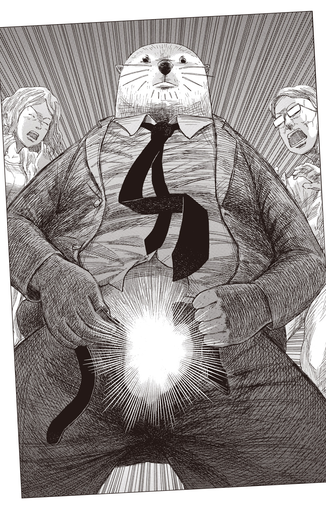
「さあ、見るがいい！ ラッコ人間の真の姿を！ 私の尻尾を！ スーツを着るために特製バンドで止めている私の尻尾を！」
「や、やめろおおお！ これ以上やったら最悪出版できなくなるぞおおお！」
私は「ふっ」と笑みを浮かべた。それは、覚悟を決めた男――否、「漢」の顔である。
「望むところだ！」
「うわああああああ!? 見たくねええええええ!!」
ラッコ覆面の男が両腕で顔を覆いながら目を閉じた。そして――
「さあ、今のうちに！」
「ありがとうございますラッコさん」
私が声を上げるのと同時に、拘束を解かれた蒼葉さんが逃げる。
「し、しまった！」
ナイフを突きつけるのをやめて目を閉じていた男が、ようやく自分が騙されていたことに気づく。
ささっと、蒼葉さんを背に庇うようにして、私はラッコ覆面の男と対峙した。
「くそっ......」
人質を失い、あたふたとする男に向かって、私はゆっくりと歩を進める。
「ああ、暑い......また暑くなってきた......」
ふう、とネクタイを緩めながら、私の拳はビキビキと岩石化していく。
「何か、スッキリ爽やかな何かが必要だ......。ただのラッコならば、ハマグリを石で殴打していれば気が晴れるかもしれない......。だが、ラッコ人間である私は、ハマグリなんか叩いていてもまるで気が晴れない......。だからそう、もっとなにか......たとえば......人をこの手で殴るとか、そういうのが......」
すっ、と私はファイティングポーズをとる。岩石の拳をこれでもかとちらつかせる。
「ひぃぃっ！ く、来るなァアアア！」
「とうっ」
すこーん、と私は前蹴りで男の手にしたナイフを蹴り飛ばした。
「ああっ、岩石に変化させた拳にばかり気を取られて......！」
「言ったろう？ 私はラッコ人間。ただのラッコとは違うのだ。当然、いつ何時前蹴りが飛び出してくるかわからない......。覚えておけ、それがラッコ人間だ！」
人質も武器も失った男には、もう為す術がない。男はその場に崩れ落ちると、嗚咽を漏らしはじめた。
「くそう......働きたくないんだ......ただただ働きたくないんだ......。働きたくはない......けれどもお金は欲しいんだ......」
「だから盗みを......」
しくしくと泣く男に、私はやさしく声をかける。
「その気持ちは、痛いほどよくわかる......。私もそうだ。常にそう思っていると言っても過言ではないほどだ。だいたい、こんなクソ暑いなか働いてなんていられない......。働くのなら冬に限る。だが、冬は寒いからよくよく考えるとやっぱり働きたくない......。春も秋も、なんかもう働きたくない......。というか寝ていたい......。私も、一年中そう考えている。だから、君の言うこともよくわかる......」
そう言って、私は微笑んだ。地面に膝をつけたまま、ラッコ覆面の男が私を見上げる。そして、しゃくりあげながら訊ねてくる。
「わっ、わかって、くれるん、ですか......？」
「ああ、とてもよくわかる。他人とは思えないくらいによくわかる。働きたくないけれど、お金は欲しい――人として君の言っていることはものすごく理解できる。私が裁判官だったら、思わず無罪にしてしまうかもしれないほどによくわかる」
男の肩にそっと手をおいて、私は力強く頷いた。
「じゃ、じゃあ......」
ぱぁっと、ラッコ覆面の男に笑顔が戻る。私はにっこりと微笑んだ。
「だが、ラッコの覆面を犯罪に使用し、可愛い動物ラッコちゃんにその罪をなすりつけようとしたこと、万死に値する！」
「......え？」
「その悪事、人として許せてもラッコとして許せん！」
一気に怒りを爆発させた私は、ラッコ覆面の男に飛びかかる。そして馬乗りになる。ラッコ人間がラッコ覆面の男に馬乗りになる。そうして、岩石化させた両手を、ガッガッと勢いよく振り下ろす。
「アルカリ玄武岩ッ！ アルカリ玄武岩ッ！」
「ガハッ、ぐはっ、ど、どうせ殴るなら、ごふっ、せ、せめてもっとカッコいい技名にしてくれ！」
「ええい、貴様のようなやつにはアルカリ玄武岩あたりで充分だ！」
ようやくパトカーのサイレンが聞こえてきた。ずいぶんと遅い到着だ。
ふうっ、と吐息を漏らし、血まみれになった岩石の拳で額の汗を拭う。すでにラッコ覆面の男は白目を剝いて気絶しており、ぴくぴくと痙攣していた。
あれほどまでに不快であった、肌を焦がすかのような灼熱の日射しも、今ではどこか心地良い。満足であった。
「お巡りさん、あいつです！」
コンビニ店員・田と野次馬たちが、駆けつけた警官を導く。事件はこれにて一件落着だ。凶悪なコンビニ強盗は逮捕され、オフィス街は平和を取り戻すだろう。どれ、ならば私も蒼葉さんとデートの約束でもしようじゃないか。青山のオシャレなカフェあたりがいいな。
手錠を掛けられながら颯爽と立ち上がった私は、両手を前に突き出しながら、警官たちに連れられてパトカーの後部座席に乗せられた。左右に警官が座り、バタン、と大きな音を立ててドアが閉められた。
「ちょっ、ちょっと待ってくれ!? なぜ私が逮捕されている!?」
私の質問に答える者はいなかった。運転席に座った男が、無線で「傷害」だとか「強盗」だとか物騒な言葉を呟いている。
「ち、違うんだ！ 私じゃないんだ！ 私はただ、ちょっと太陽が眩しかっただけで......」
しどろもどろになりながらも、私は必死に誤解を解こうとする。が、しかし、左右に座った警官は、ただただ無表情のまままっすぐ前を向いているだけで、私の言い分などまるで取り合ってくれない。
こうなっては騒ぐだけ無駄......。夕方のニュースが、そして明日の朝刊が、大々的に【ラッコ人間逮捕される！】という話題を報じることであろう。主人公であるラッコ人間が捕まってしまっては、もはや休まざるを得まい。すなわち、来週の週刊少年ジャンプに掲載されるはずの『ラッコ11号』は休載することになる......。これはしかたのないことだ。
俯きながら、私は考える。このまましばらく休むしかないだろう、と。
「クックック......」
運転席の男が静かに笑った。
「休みたいと考えているな......だが、捕まって刑務所に入ってからが本番なんだよ......」
「なっ、何を言っている貴様......っ！ それではまるで......！」
――田のようではないか......！
冷たい汗が一筋。私はおどろきに目を見開いて、運転席にいる男をじっと見つめた。
「ま、まさか......」
気がつくと、全身がガタガタと震えていた。呼吸が荒くなる。
運転席の男が、おもむろに警察手帳を開いてそれを私に見せつける。
そこに書いてあった名前は――
【田】
「や、やはり田......っ！」
――コンビニ店員・田に続いて、警官・田も登場するとは......！
田は、どこにでもいる。コミックス12巻の表紙にまでいる。タイトルロゴの隙間に田の足を発見したときと同じ絶望感が私を襲う。
ハンドルを握り締めて、田が声を張りあげた。
「『真・ラッコ裁判編』......開幕だ！」
「田ァーッ!!」
叫び暴れだした私は左右の警官によって取り押さえられる。そうこうしているうちに、田の高笑いとともにパトカーが走りだした。
すぐに誤解が解けて釈放されたからよかったものの......。
田......一体どこまでこの私を舐めくされば気が済むのか......。
嘆きの動物園
ゴールデンライオンタマリン。
突如思い浮かんだその言葉が、気になってしかたない。
まるで、脳にこびりついてしまったかのように離れないその言葉。
一体なんなのだゴールデンライオンタマリンとは......。
道行く人に訊ねてみようか？ そのようなことを考える。だがしかし、この私ですら悩むような難問をぶつけられたとして、果たして誰が答えられるだろうか。ある日突然見知らぬラッコ人間からゴールデンライオンタマリンという謎の単語を聞かされるその人のことを思うといたたまれない気持ちになってくる。やはりこういったことは自分自身で解決するしかないだろう。しょせん人はひとり。ラッコ人間もまた孤高の存在なのだから......。
落ち着いてよく考えてみると、ライオンと名がついている以上は何かしらの生物なのだろうと私は見当をつける。たまたま目に入ったライオンの顔をした看板が、私にそのようなインスピレーションを与えてくれたのだ。
それは動物園の看板であった。インスピレーションへの感謝とばかりに、私は「ラッコ人間一枚」とチケットを購入した。ラッコ人間は元来義理堅い生き物なのである。
園内に入った途端、むっとするような獣臭が私を包みこむ。猿山などを眺めながら、私は思考を続ける。なんとかして自分自身の中から答えを見つけなくては、気になって仕事どころではないからだ。決して仕事をさぼりたいわけではないのだ。仕事をさぼって適当に動物園あたりをぶらつきながらのんびりしようと思っていたわけではないということをここに明記しておく。そのように思われてしまったとしたら、それは心外であるからだ。
そう、動物園に来さえすれば件のゴールデンライオンタマリンが見つかるかもしれないと思ったからここに来たわけで、私は決して仕事をさぼっているわけではないのだ。
さて、ゴールデンとはすなわち「黄金」のことである。きょろきょろと金色の生き物を探しながら私は園内を進んでいく。ライオンとはすなわち「獅子」のこと。ならばゴールデンライオンタマリンとはすなわち「黄金の獅子であるタマリン」ということになる。なるほど、タマリンを探せばいいのだ。わからん。タマリンってなんだ。迷宮入りであった。
ベンチに座りながら考える。もしこのままゴールデンライオンタマリンの正体がわからなかったらどうしよう、と。インターネットなどで調べるのは邪道である。自らの力で思い出さなければならないと私は考えていた。なぜならば、そうでなければ一歩も前に進めないからだ。私は決して仕事をさぼりたいわけではないが、このままではゴールデンライオンタマリンのことが気になって気になって仕事が手につかなくなってしまうだろう。これはもうしかたのないことだ。もはやゴールデンライオンタマリンのことを思い出すまで有休を取るしかないだろうと私は決意した。
と、そこで私の目はある建物に釘づけとなった。その建物には『特設水族館コーナー』と描かれていた。その看板、それはまさしくラッコの顔を模したものであった。
まさかまさかと冷や汗を流しながら私はその建物に駆けこんだ。建物内はひんやりとしていて、汗で濡れたワイシャツでは寒いくらいであった。
大きなガラスの水槽――そこで飼育されていたのはペンギンやホッキョクグマ、そして可愛い動物ラッコちゃんであった。
私はラッコ水槽の前に立った。まさか動物園でその姿を見ることになるとは......。そしてそのラッコたちの取った行動――ああ、なんということだろう。ハマグリを持ったラッコがすーっと私の下へ近づいてきたかと思ったら、それをガラス面に叩きつけたではないか。一心不乱にガラス面へと叩きつけてハマグリを割ろうとしているのだ。その姿に、気がつくと私は涙を流していた。
ラッコたちは知っているのだ。このガラスは硬い、と。そして自分たちはもはやここから外に出ることはできない、と。自由のないラッコたち。有給休暇の取れぬラッコたち。石を使ってハマグリを叩き割ることを忘れてしまった悲しきラッコたち。
私は手で口元を押さえると、嗚咽を嚙み殺した。だがしかし、涙は止めどなく溢れてくる。
そんな私を指差しながら、チャラチャラとした格好の小汚いギャル男と、どこの惑星出身なんだと問いたくなるほどにワケのわからない髪型とメイクをした女のカップルが笑っていた。
ラッコ人間がラッコを見て泣いているというのがえらくツボにはまったらしい。そのようなことを言いながら、ふたりは人目をはばからずに大声で笑っていた。手をバンバン叩きながら笑っていた。まるでオランウータンのようだ。
結局ゴールデンライオンタマリンを見つけることはできなかった。ゴールデンライオンタマリンは絶滅の危機にあるたいへん珍しい動物で、この動物園では飼育していないと親切で美しい飼育員の女性が教えてくれた。さらには、がっくりと肩を落とした私を見かねたのか、わざわざ図鑑を持ってきてくれて写真まで見せてくれた。
なるほど、これは確かにゴールデンライオンタマリンだと私は納得する。
美人の飼育員に親切にしてもらったおかげで、私はその日一日とても素晴らしい気持ちで過ごすことができた。明日からまた仕事をがんばろうという気にさえなってくる。実に有意義な一日であった。
園の出口にあったアンケート用紙に、私は感謝の言葉を書いてその場を去ることにした。ラッコ人間は元来義理堅い生き物なのである。
さらさらとペンを走らせる。
『人語を操るオランウータンのつがいがなぜか檻の外にいましたが、ちゃんと岩石の拳で気絶させたのちに檻の中へ戻しておいたのでご安心ください』と。
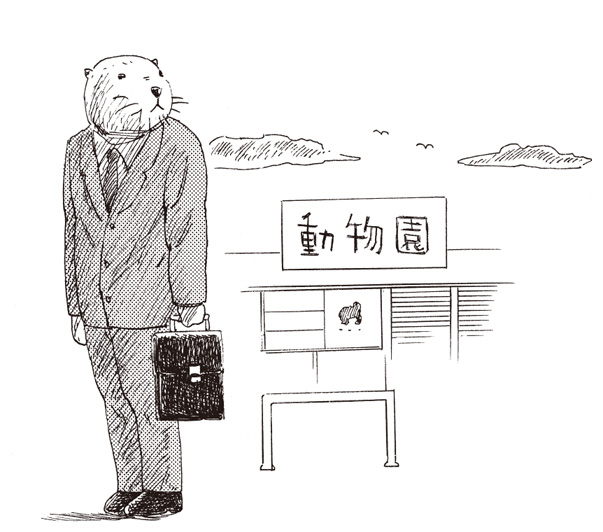
今日もまた、すれ違う人全員が私の顔をチラ見していく。
これは決して自意識過剰などではない。本当に、街を歩くと道行く人全員が私の顔を見ては、仲間内でコソコソと何かを語り合い笑うのだ。
ああ、確かに以前の私ならば、自意識過剰なのではないかと己を疑っただろう。疑って、そして病院へと駆けこんでいただろう。私は視線恐怖症なのではないか？ という疑惑を抱えて。
しかしそんな疑惑は、医者の放ったこのセリフの前に脆くも崩れ去ったのだ。
「なに？ 人の視線が怖い？ それは気にしすぎ――ややっ、君はラッコ人間ではないか!? ほほう、これは珍しい......ラッコ人間......うひひ......珍しい......ハァハァ、ちょ、ちょっと解剖したいな......」
あの時の医者の目――どす黒く濁った医者の目を、私は決して忘れることはないだろう。
直後、私が両手で顔を隠しながら一目散に病院から飛び出したのは言うまでもないがね。
まったく......頭部はラッコ、そして身体は人間のラッコ人間がそんなに珍しいものなのか。いや、そのようなことは決してないはずだ。むしろ、ラッコ人間などというものは、ごくごくありふれた存在であるとすら思われる。現に私などは、毎日ラッコ人間を鏡で見ているわけだし......。
だがしかし、そうは言っても人の視線......やはりいつまで経っても慣れないものだ......。ジロジロと見るだけ見て、コソコソと何かを言われて笑われるのはいちばん精神にくるのだ。
だが、この日はいつもと少しばかり違っていた。
「あの、ラッコ11号さん......ですよね？」
なんと、道行く人が私に声をかけてきたのだ。これには正直驚いてしまった。驚いた理由、それはただ声をかけられたからではない。なにせ声をかけてきたのは、今時の格好をした若い女の子の集団であったからだ。
「いかにも、私がラッコ11号だが」
と私が答えると、黄色い声が上がった。すぐに、私はたくさんの女の子によって囲まれてしまった。突然のことに私が戸惑っていると、
「すごーい、テレビで観たのと一緒！」
女の子たちからそのような声が上がった。テレビ......その単語が脳内に飛びこんで、瞬時に今ある状況の答えを導き出した。
「そうか......ＣＭ効果......か......」
彼女たちは、平帆水産のテレビＣＭに出演している私を観て、そして街でたまたま私を見つけて声をかけてきたのだ。
「テレビで観るよりも、ずっとイケメン......いえ、イケラッコメンですね」
「イ、イケラッコメン......？ なんだかよくわからないが、とても気分がいい響きだ......」
今までは物珍しそうに私をチラ見して、コソコソとしているだけだったのに、今やたくさんの女の子たちが私を囲んできゃーきゃーと騒いでいる......。
いつの間にか、私はこんなにも有名人になっていたのだ。怪しいＣＭに出続けた貝――いや、甲斐があったというもの。
「今まさに、ラッコブームが到来しているというのか......っ!?」
私がそう叫ぶと、また女の子たちが黄色い声を上げた。なんだこれは？ とても気分がいい......。若い女の子たちに囲まれて、とても気分がいい！
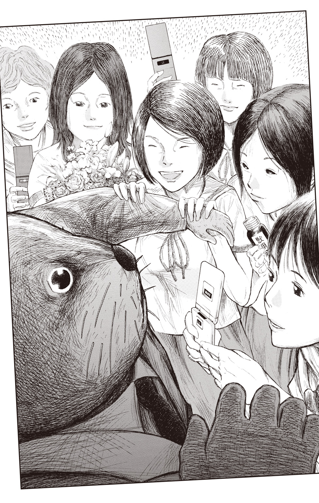
「いやあ、はは、まいったな......。ふう、それにしても今日はいつもよりも暑いね」
さっと取り出したラッコちゃんプリントのハンカチで額の汗を拭う。もはやそれだけで歓声が上がる。
「いや～素敵ー」「こっち向いて～」「イケラッコメーン」
きゃーきゃーと騒ぎながら、今や私の周囲は押すな押すなの大賑わい。
「ラ......ラッコブーム......キタァァァッ！」
うおおお、と天高く腕を振り上げ叫ぶ私。今まさに、私こそがこの世界の中心であった。
「ふう、しかし暑いな......」
たくさんの女の子に囲まれて、緊張からか汗が止まらない。汗を拭う私に、近くの女の子から飲み物の差し入れが。
「ラッコ11号さん、よかったらこれ、飲んでください」
伏し目がちに、頰を染めながら飲み物を差し出す女の子。なんという我が世の春。謳歌するしかない......このラッコブーム！
「ありがたくいただくことにするよ」
にこっ、と微笑んで、差し出された飲み物を受け取る私。今や私の一挙手一投足に注目が集まっていた。努めて紳士的に、だがしかしスタイリッシュに、私は飲み物のブランドを確認する。
「うん、『獣用麻酔薬』......珍しい名前の飲み物だ......ん？」
私の周囲を取り囲んでいた女の子たちの瞳に変化が生じたのはまさにその時であった。食い入るように私を見つめるその目がどす黒く濁っていることに気づく。そう、まさにあの時の医者のように。
「あ......れ......？」
思わずたじろぐ私。
あたりは一気に静まりかえっていた。先ほどまできゃーきゃーと騒いでいたのが噓であるかのように、誰もが押し黙り、何かを期待しながら私を見つめていた。
「さあ、どうしたんですか？ 早く、早く飲んでください」
飲み物をくれた女の子が、興奮を押し殺しながらそう口にした。
何かがおかしい。だらだらと汗を流しながら、私は飲み物と称された何かと女の子たちを交互に見比べていた。そして――
「う、うわああああっ」
悲鳴を上げ、獣用麻酔薬と書かれたビンを投げ捨てて、私は逃げだした。よろめきながらも人混みを抜け出す。なにか、ひどく嫌な予感がする。
転びそうになりながらも必死に走り、その場から離れる。すぐに息切れを起こした私は、膝に手をついて呼吸を整えた。一体何が起こったというのか......。私に麻酔薬を飲ませようとしたのだろうか......？
混乱しながらも、ちらりと背後の様子を確認した私の目に飛びこんできたのは――
「待てエエエエ！ 待てエエエエエエエエエエエエエエエ！」
無数の血走った目。目。目。
長い髪の毛を振り乱しながら追いかけてくる人。人。人。
それはまさに鬼女の群れ。
「ヒィィ!?」
短い悲鳴を上げて、半泣き状態のまま私は再び走りだす。
「誰か、誰か助けてくださいッ！」
脇腹が痛んだ。あまりの恐怖に走りながら叫ぶ。次の瞬間――
「ラッコ11号がいたぞおおおおおおおおっ!!」
誰かが大声を上げた。道行く人すべての視線が私に集まる。私を見る皆の瞳が、どす黒く濁っていた。
「ラ、ラッコ11号、うへへ、だ、大丈夫......すっ、すぐにそこに行きますから......こっ、怖くないですよ、だからそこでじっとしていて」
目を血走らせ涎を垂らしながら、近くにいた男性が引き攣った笑顔を浮かべてじりじりと近づいてきた。
「なっ、なんなんだ一体っ!?」
あまりにも異常な事態。まるでゾンビか何かのように、私を見たすべての人が、私を追ってくる。道行く人すべてが追跡者に変わる。声と一緒に背後からたくさんの足音が追いかけてくる。
転がりこむようにビルとビルの間にある細い路地に飛びこんだ私は、置いてあったポリバケツを盾にして身を低くした。
「どこ行ったッ!?」「まだこの近くにいるはずだ！ 捜せッ！」
追っ手が、そんな映画のようなセリフを叫びながら私の前を通過していく。私はカラカラに渇いた喉に唾液を送りこんだ。
「いっ、一体何が起こっているんだ......」
ポリバケツの陰に隠れながら震えていると、向かいのビルにあった街頭大型ビジョンから信じられないニュースが聞こえてきた。
『緊急速報です！ 全国の皆さん！ ラッコ人間は宇宙人です！ 見つけしだいすぐに捕獲してください！ なお、捕まえた人には謝礼として賞金二十億円が支払われます！』
「に、二十億ッ!?」
ありえない金額に、私は思わず驚愕の声を上げてしまった。しかしそんな私の声は、ニュースを聞いた通行人たちの声によって搔き消されていた。
「うおおおおっ、絶対に捕まえてみせるぜ！」
大学生風の若者が叫ぶ。
「洋服に鞄、それに宝石！ 欲しいものすべてが手に入るわっ！」
水商売風の女も叫ぶ。
「捕まえたら、もうマンガを描かないで済むんだ！」
マンガ家とおぼしき男までもが天に向かって叫んでいた。
ニュースを聞いた人々はみな一様に熱狂し、すぐに叫びながら走りだしていった。
私は啞然としながら街頭大型ビジョンを――くり返し流されるありえないニュースを見上げていた。
「恐るべしラッコ人間......まさか宇宙人だったとは......！」
宇宙人は実在した！ 本当に、いたのだ......！ しかも、それを捕まえたら賞金二十億円をくれるという......。皆が熱狂するのも無理はない。その、ラッコ人間とやらを捕まえたら、二十億......いや待て......よく考えたら私のこと......か......？
「なるほど、私はラッコ人間......どうしよう......」
がくっ、と膝と両手を地面について落ちこむ。今や、街の人すべてが追跡者であった。このまま出ていったら、すぐに捕まってしまうだろう。いや、捕まるだけならまだしも、この金額、私を発見した時のあのどす黒く濁った連中の目......このままではもみくちゃにされて殺されてしまう......！
私が宇宙人であるというデマのせいで、私の命はもはや風前の灯火と化していた。ラッコの顔は目立つ......ここまでくると、一体なぜ、私の顔はラッコなのかと思わずにはいられない。そうか、ラッコ人間だからか......。
嘆く私に、一筋の光明が。はっ、と私は気づく。捨ててあった紙袋の存在に。
「そうだ、これをかぶってラッコの顔を隠せば目立たない！」
どうやら、絶望的な状況に追いこまれてこそ、私の頭脳は本当の力を発揮するらしい。これはいける！ 天才的な発想だ！ そう確信する。
両目の位置に合わせて、指で紙袋に穴をあける。これで脱出できる。ほとぼりが冷めるまでどこか遠くに逃げよう......。仕事などしている場合ではない......。しょうがない、これでは会社にも行けないのだから。しょうがないのだ。あくまでもしょうがないの方向で。
紙袋をかぶった私は、そそくさと人混みに紛れた。
「なんだあの超絶に目立つ野郎はッ!?」
「怪しい！ 明らかに顔を隠しているぞ！ 野郎、タックルをくらわせてやる！」
路地裏から出た直後、男の強烈なタックルを腰に受けて、すぐに私は取り押さえられた。
「ぐはあああ、い、いきなり何をッ!?」
おかしい、顔はバレていないはずなのに......！ 紙袋を必死に押さえながら路面に横たわる私はすぐに取り囲まれてしまう。目の前に、ずらりと靴が並んだ。
「やい貴様、ラッコ11号だろう？」
スニーカーの男が私に問う。
「ち、違いますっ」
冷や汗を流しながら私はすぐさま否定する。
「違うというのならば、最終学歴と名前を言ってみるがいい」
「ひ、東日本水産大学卒、鈴木太郎です」
うろたえながらも、私は経歴を詐称する。
「噓をつくなああああああああっ」
バリーンと紙袋を剝ぎ取られた。
「あああっ、やめてくださいっ、やめてくださいっ」
「ホラみろおおおお、やはりラッコ11号ッ！ なにが鈴木太郎だ！ ラッコ人間のくせに偽名なんか使いやがって！」
「うううっ、人、いや、ラッコ人間違いなんですッ！ 信じてください！」
両手で顔を隠しながらじたばたするも、屈強な男たちに上から押さえつけられてしまっては、もはや為す術がない。
「フフフ、ラッコ人間違いだろうが何だろうが、こっちはラッコ人間さえ捕まえれば賞金二十億もらえるんだ！ 大人しくしろ！」
スニーカーの男がそう言うと、周囲から歓声が上がった。
「やったぜ、俺たち大金持ちだ！」
「ああ、みんなで山分けしよう！」
「年金を、今度こそ年金を払うんだ俺......！」
這いつくばってもがく私。それとは対照的に、お祭り騒ぎの若者たち。
その、鳴り止まない歓喜の声が、私の拳を岩に変える。浮かれ騒ぐ若者たちへの怒りが、私の拳に力を与える。
ウオオオと叫びながらめちゃくちゃに拳を振り回す。岩石の拳は大地を穿ち、その勢いを利用して私は立ち上がった。
「なにが宇宙人だ！ なにが二十億だ！ 二十億っていうのは、働かないでも一生遊んで暮らせる金額なんだぞ！」
激しい怒りがビルの壁面に穴をあけ、近くにあった街路樹を薙ぎ倒した。岩石の拳を振り上げながら、逃げ惑う若者たちを追いかける。追いかけながら、叫ぶ。
「二十億だなんて自分で自分を捕まえたいくらいだ！ そっ、その手があったか!?」
叫んで、私はすぐに冷静になった。岩石と化した拳がみるみるうちに人間の手に戻ってゆく。なぜ、今まで気がつかなかったのだろう。お金さえあれば仕事を辞めると常日頃から豪語する身としては、この話――またとないチャンス！
――お金さえもらえれば、あとはどうとでもなる......！
そう考えた私は、さっそく街頭大型ビジョンに表示されている『捕まえたらここに電話してね』と書かれていた連絡先に電話をかけることにした。
「あーもしもし、ラッコ人間を捕獲した。というか――私だ」
ほどなくして、私の下にいかにもといった雰囲気の黒塗りの車がやって来た。ベンツである。私のポルシェのほうが高級だな、などと値踏みをしていると、中から男がふたり降りてきた。
真っ黒い中折帽に、同じく真っ黒なサングラス、背広もネクタイも、そして袖口からチラリと覗く腕時計までもが真っ黒という全身を黒で固めた二人組である。双子かと思うほど同じ格好をしている。
その姿に、思わず私は呟いた。
「その姿、やはりＮＡＳＡか......！」
「な、なんのことだ......？」
動揺する二人組。
「明らかにメン・イン・ブラック。ＮＡＳＡの陰謀に違いない」
「ふふっ、陰謀論について話し合っている暇はない。我々と一緒に来てもらおうか」
「二十億はどうした？ どこにも見当たらないが？」
私がそう言うと、二人組はお互い顔を見合わせた。そして――
「大人しく我々と来い！」
同時に声を上げて襲いかかってきた。
「う、噓だったのか!?」
腕をつかまれ、無理矢理車に押しこまれそうになる。私は二人組と揉み合いになった。
「やっと......やっと働かないで生きていけると思ったのに......！ 騙したのか......騙したのかあああっ！」
怒りに打ち震え、ブチギレた私は、すぐさま男の顔面に岩石の拳を叩きこんだ。
「巨晶花崗岩――!!」
ナサーン！ と男の顔面に拳が直撃する。が、しかし――
正確に顔面の中心に叩きこんだはずの拳が、ずるんと滑って威力が受け流されてしまう。
「そ、そんな、馬鹿な......」
自慢の拳――だがしかし効果は皆無。確かに殴ったはずなのに、目の前の男はサングラスすら割れていない。その顔はまったくの無傷であった。動揺する私に向かって、にやりと白い歯を見せて笑う男。
と、次の瞬間――
後頭部に衝撃が走った。
「ぐああああッ!?」
よろめきながら振り返ると、もうひとりの男が背後で特殊警棒を振り上げていた。
「な、何考えてるんだ！ 人様を鈍器で殴るなんて！ 頭がカチ割れるだろうがッ！」
そう声を張り上げた瞬間――ガッ！ 振り下ろされた警棒で二撃目をもらう。私はそのまま気を失った。
気がつくと、すでに車が動いていた。私は後ろ手に縛られ、後部座席に放りこまれていた。どこへ向かっているのだろうか......？ 後頭部がズキズキと痛んだ。身動きがとれない。前の席から二人組の会話が聞こえてきた。
「愚かな地球人たちを利用して、ラッコ11号を捕獲する作戦だったが――」
「カネに目が眩んで、まさか自分から電話してくるとはな」
苦笑しあう男たち。
「愚かな......地球人たち......？」
不可解な言い回しに、思わずそう口にする。助手席の男が振り向いた。
「おや、目が覚めるのが早いな。さすがは両手を岩石に変化させるラッコ人間。頭も石頭だったか」
「お前たちは一体......？ ＮＡＳＡではないのか!?」
ニヤニヤと笑う男が、サングラスをはずした。「あっ」と私は声を上げる。その目は金色に光り輝いており、明らかに人間のものではなかった。あまりのことに息を吞む。その間にも、みるみるうちに男の顔が変化していく。首から先が前に突き出ていく。骨が軋む音が、車内を満たしていく。口はパックリと耳まで裂けていき、今や男の肌は黒く光沢のあるものに変わっていた。その顔はまるで――
男が名乗る。
「我々はイール星人。今から我々の宇宙船に来てもらう」
「イール......日本語にするとウナギ星人というわけか......！ なんという残念なセンス！ 田以下っ！」
私の反応に苦笑いしながら、男が続けた。
「地球を侵略しようとやって来て驚いたよ。我々以外の異星人が、すでに地球人に交ざり日常生活を送っていたのだからな」
「ましてやその男、テレビのＣＭにまで出ていて、ネット上などでも人気があるらしいじゃないか」
そう言って運転席の男が笑った。こちらの男の肌も、すでにぬるぬると黒く光っていた。
「ちょ、ちょっと待て！ その前に私は宇宙人だったのか!? そんな設定初めて聞いたぞ!? 人......いや、ラッコ人間違いではありませんか？」
後部座席に寝かされたままジタバタと騒ぐ私であったが、当然、男たちはそんな私の声などには耳も貸さない。ウナギ人間へと変身を果たした男が、その恐ろしい目的を打ち明けた。
「地球を侵略するのに、我々以外の異星人にウロチョロされていると面倒なんでね......。ラッコ11号――いや、ラッコ星人よ、この惑星から出ていってもらうぞ！」
「ラッコ星人!? い、いや、それよりも、一体私をどうするつもりだ!?」
「我々の宇宙船にある転送装置に放りこんで、太陽系の外に飛ばす！」
「な、なんて恐ろしいことを！ ふざけるなッ！」
あまりにも理不尽な物言いに、私の怒りが爆発した。
うおおおお、と叫びながら、私は両手の自由を封じていた拘束を引きちぎった。次いで、窓の外にうなぎ屋ののれんを発見した私は、斑岩を繰り出して車のドアを吹き飛ばした。
「逃がすなッ」
運転席の男が叫ぶ。しかし、男が急ブレーキをかけたのと同時に、私は車外へと飛び出していた。けたたましいブレーキ音を背に聞きながら鳥のように宙を舞うラッコ人間。私は、岩石の両拳を顔の前でクロスさせて、そのままうなぎ屋の戸を突き破ってエントリー。
荒々しいタイヤ痕を残して停車した車から、二人組が飛び出してきた。
「我々から逃げられると思うなよ」
「逃げるつもりなど毛頭ない」
言いながら、私はゆっくりとうなぎ屋から出る。すでに私は、店内で板前姿に着替えていた。額にねじりはちまきをギュッと巻いて、男たちと対峙した。
「まだ、抵抗するつもりか。貴様の岩石の拳は、我々には効かないというのに......」
言いながら、男のひとりが帽子と背広を脱ぎ捨てた。顔だけでなく全身が黒く光沢を帯び、細く、そして長く変形していった。
大ウナギの化物が、姿を現す。これが、イール星人の真の姿。大ウナギはのたうち回りながら、私に飛びかかってきた。
しかし私は冷静であった。
「関東風か関西風か......それが問題だ......」
呟き、私はすらりと包丁を構える。
「地球侵略......その悪事、この私が裁く！」
パックリと裂けた口が眼前に迫る。次の瞬間――
「ヒラホー！」
気合い一閃。私は「ヒラホー！」の掛け声を包丁にのせ、向かってきた大ウナギを一刀両断。見事に捌いてみせた。
私を鼓舞するかのように、いつの間にやら周囲から「ヒラホーヒラホー」というマヌケだが、どこか中毒性のあるＢＧＭが流れはじめた。
「おのれ、よくもドヨーノを！ 惑星追放など生温い！ 貴様はこのウシノーヒが殺す！」
「そんな名前だったのッ!?」
もうひとりの男もまた、正体を現す。大ウナギの化物となって襲いかかってくる。
私はゆっくりと息を吐いて、集中する。向かってくる大ウナギ。
「串打ち三年、裂き八年......焼きは一生！」
「ヒラホー！」と声を上げ、包丁を振るう。すぐさま、私はテキパキとウナギの身に串を打ちタレを付けてうちわで扇ぎながら蒲焼きをつくっていく。
できたてのそれを熱々のごはんにのせたら、うな丼の完成だ！
私はうな丼を掲げながらキリッと顔を引き締めた。
「イール星人......お前たちの好きにはさせない......！」
はむぅ！ ウナギとごはんを頰張ってもふもふしながら、
「土用の丑の日にはウナギを食べて、みんなでこの惑星を守ろう！」
ガッツポーズ。決まった。
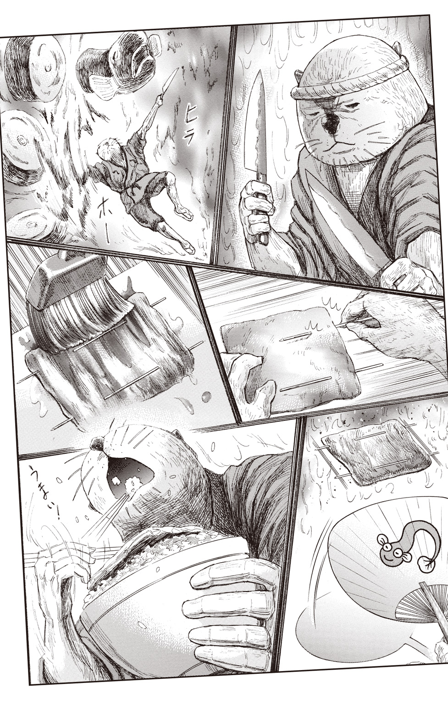
「カット！ はいＯＫでーす」
集英ＴＶのスタッフが声を上げた。私はウナギにオエッとしながら、カメラマンの横で腕を組んでいた社長の下に向かう。
「どうでしたか社長？」
口元を拭きながら社長に訊ねる。しかし、やはり魚貝類は口に合わない。ウナギなどもってのほかだ。
「おつかれさまでーす」とイール星人の着ぐるみに入っていた人が会釈をしながら退場していくのを横目で眺めながら、私は撮影中ずっと気になっていたことを社長に訊ねてみた。
「というか社長、このＣＭ......長くないですか......？」
撮影にものすごく時間がかかったような気もするのだが......。そもそも、脚本からしてちょっとよくわからないといった代物だったのだが、果たしてこれでちゃんとＣＭになっているのだろうか......。
腕を組んだまま、社長が口を開いた。
「ふむ......言われてみると確かに長いな......。それにイール星人というのもよくよく考えてみるとわかりづらいか......。いっそのこと『ウナギ星人出現！ ヒラホー！ うな丼完成！』ここだけを使ってＣＭにしよう」
「えっ!? そ、そんな......！ 私がどれほど街中を走り回ったと――」
社長の思いつきで、今までの撮影が一瞬にして無に帰そうとしていた。私がぷるぷると震えながら社長の顔色を窺っていると、社長は冷静にひと言。
「ラッコ11号くん、時給を三十円アップしてあげよう」
「時給制だったのッ!?」
――平帆水産株式会社第一宣伝部部長がまさか時給制だったとは......。
私が呆気にとられていると社長が、
「いらないのかね？」
そう訊ねてくる。
「い、いえ、くれるというのであれば、それはもう」
「では、このＣＭに関して、君は何ひとつとして文句はない。そうだね？」
集英ＴＶのスタッフが慌ただしく動いているのを見つめながら、社長がそう言った。
「お、お疲れさまでした......」
頭を下げ、それ以上は何も言わずに、私は撮影所を後にした。
その帰り道、私はスーパーに寄っていた。やはりウナギは口に合わない。口直しをするのならば、ビフテキに限る。頃はすでに夕暮れ時、夕飯の材料を調達するのだ。
精肉コーナーにやって来た私は、すぐに特売のシールが貼られていたパックに飛びついた。しかし、手にした瞬間「三十円アップ」という社長の言葉を思い出す。私はその特売品をじっと見つめた。
スーパーの袋を提げて、私は帰路についた。河原沿いの土手をとぼとぼと夕日に向かって歩く。暑さはまだ和らぎそうにない。今夜もまた、熱帯夜になるだろう。
歩きながら、撮影所でのことを考える。
あの社長の目。私になど目もくれないで、集英ＴＶのスタッフを見つめ続ける社長のあの目。
つまりは、それで手を引けと、時給を三十円上げてやるからこれ以上はもうガタガタ言うなと、そういう......。
「しょせんはサラリーマン......長いものには巻かれよ、か......。いや、違う......三十円に負けたわけではない......決して......！ むしろこれは、労働に対する正当なる対価......」
ぶつぶつと、ひとり呟く。スーパーの袋の中では、特売品の牛肉――の隣に置いてあった、いつも買うものよりも少しだけ値段の高い牛肉が揺れていた。
賢者の密室
さて、さっそくだがまずは『橄欖石ソレアイト』の話をしようと思う。
橄欖石ソレアイトといえば、この私――ラッコ11号の主力技のひとつであることで有名だ。むしろラッコ11号といえば橄欖石ソレアイトといった具合に、代名詞にすらなっていると言っても過言ではないだろう。
ネット上などでは「橄欖石」と書くのが面倒くさいのか、よく「ソレアイト」だけで表記されることがあるが、ちょっと言いたいことがあるので、次の一文を見てもらいたい。
ラッコ部長怒りのソレアイト
おわかりいただけただろうか？
これはもう、最悪だ。最悪のパターンだ。これを書いたやつ、何をそんなに生き急いでいるのだ？ 省略するんじゃない。
平帆水産株式会社第一宣伝部部長ラッコ11号怒りの橄欖石ソレアイト
次からはこのように書いてくれ。絶対にだ。
と、まあ、ちょっとした愚痴からはじまってしまったわけだが、この橄欖石ソレアイト――一撃で悪の頭をカチ割るという凄まじい威力を持った技だ。
ところで、なぜ私が急にこんな話をしはじめたのか疑問に感じる人もいるのではないかと思うので、ちょっとその理由を――
『殴るときに叫ぶ岩石の名前によって、何か違いはあるのですか？』
理由はこれである。この質問である。多くの人からたびたび訊かれるこの質問。この前などは、私が出演しているＣＭを観た視聴者の皆さんから何通もこれと同様の質問が書かれたお手紙をいただいたりしたわけで、ここで一度ハッキリと答えておくべきなのではないだろうかと思うに至ったというわけだ。
だからこれから、私がよく使う技の名前とその威力についてちょっと語らせてもらいたい。いいですか？ ダメと言われても語りますが。
さて、橄欖石ソレアイトの次は『変朽安山岩』だ。
こちらも私の主力技のひとつで、なんと悪の頭をカチ割る効果がある。橄欖石ソレアイトで殴ったあとに変朽安山岩でワンツーを決めることもある。以前、熱心な読者の方が変朽安山岩は右手で繰り出すことが多いという研究結果（？）を報告してくれたことがあるが、私は特に意識してどちらの手でとかは考えていないんだ。そうですか。右でしたか。でも左でも殴ります。ファンレターありがとう。いつも読んでます。これからも頑張ってカチ割ります。
さて、次に『斜方輝石橄欖岩』だ。
私、ラッコ11号最大の大技――それがこの斜方輝石橄欖岩だ。岩石と化した拳の連打を瞬く間に浴びせるという凄まじい技だ。無論、この技を浴びた悪の頭はカチ割れるがね。思えば連載第一話目から使っているのかこの技......。
ラッコ11号といえば斜方輝石橄欖岩だった時代......。まだ橄欖石ソレアイトが登場していなかった頃の話だ。
一時はラッコ11号の代名詞にまでなった斜方輝石橄欖岩であったが、その後の橄欖石ソレアイトの台頭によりすっかり影が薄くなってしまったようだ。ネット上などで『最近のハルなんとかの影の薄さは異常』だとか『また使用されなかったハルなんとかさん』とかそういう書きこみを目にするたびに私はなんとも言えない気持ちになる。おっと、目から汗が......。
一体なぜ橄欖石ソレアイトがそれほどまでに台頭したのか......。ここだけの話、ロン毛のお兄さんが斜方輝石橄欖岩では漢字が多すぎて読者が覚えにくいと言ったとか言わなかったとか......。声優の子安武人さんみたいな声で言ったとか言わなかったとか、そういった大人の事情が......。いや、なんでもない。忘れてくれ。
さてさて、最後に『斑岩』の話をしよう。
斑岩は、いわゆるジャブのような技で、非常に使い勝手がいい。いつでもどんなときでも斑岩！ 驚くべきことに、叫んで拳を振るえば目の前にいる悪の頭をカチ割ることができる！ もはや説明不要！ それが斑岩！
うん？ ちょっとわかりづらいって？ もっと具体的に......ですか......？
斑岩の使いどころ――それはたとえば、あまりにも仕事が嫌でストレスで胃や腸を悪くして、慌ててトイレの個室に駆けこんだところ、数名の社員が私が後ろの個室にいるなどとは露ほども思わずに、私の悪口を言いながら小便器で用を足しはじめた時――こんな状況。
激しい怒りによって岩石に変わった拳を振り上げ、今こそ叫ぼう斑岩！
......もっとも、今まさに、両手の拳が岩石に変わってしまったがために、トイレットペーパーを巻き取ることができず、出ようにも出られなくて困っているところなんですがね。ああ、イライラする......！
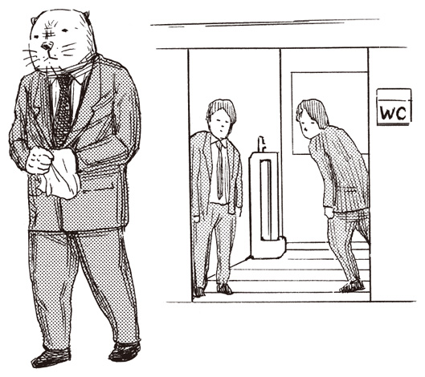
耳の奥で鳴り響く重い音。絶え間なく鳴り響く重い音。風だろうか。ふと、潮の匂いを感じて、私はうっすらと目を開けた。青い空に、燦然と輝く太陽が眩しい。
目を細めながらぼんやりしていると、突如として地面が揺れた。
「なっ、なんだっ!?」
異常事態に一気に覚醒した私が、がばっと飛び起きると、目の前にはどこまでも広がる大海原があった。意味がわからなかった。不安を抱えたまま、キョロキョロと意味もなくあたりを見回す。私は小型船に揺られていた。ここは海の上だったのだ。耳の奥で鳴り響いていた音の正体は、船のエンジン音であった。
振り返ると、船の操舵室に入社八年ヒラ社員の田がいた。サングラスをかけて、舵を握っている。
――おのれ田め......さりげなく船舶の免許を所有しているとは......！
そんなことを考える。一体全体、私に今何が起きているのか......。
落ち着いて、記憶を辿る。
私は、社長室に呼び出されていた。
こう言ってはなんだが、社長に呼ばれるときというのは、たいていろくなことがないものだ。いや、いつも――と言ったほうがいいだろうか。なのでこのときも、私は冷や汗を流していた。
部屋に入ると、机の上に両肘をのせて指を組んだまま固まっている社長の姿が目に飛びこんできた。すでにシリアスな雰囲気である。ごくり、と唾を吞む。私は今すぐ腹痛を理由に早退したくなった。
「ラッコ11号くん......これを見てくれたまえ」
見ると、机の上になにやら書類が置かれていた。訝しみながらも、私はそれを手に取った。びっしりと文字が書いてあって読みづらいそれに、目を通す。
『可愛い可愛いマグロちゃんを乱獲する平帆水産に天誅を』
平帆水産は極端な営利主義によって暴利を貪る悪の会社だ。儲け第一主義という邪な思想を基に可愛い可愛いマグロちゃんを乱獲し国際社会の秩序を乱す悪の会社であることはもはや証明する必要すらない。がめついエコノミックアニマルどもには裁きが必要だ。あくどい商売に可愛い可愛いマグロちゃんを利用する平帆水産は潰れて当然の会社である。我々が正義であることは誰の目から見ても明らかであり国際社会は我々の味方だ。可愛い可愛いマグロちゃんを利用して私腹を肥やす平帆水産には死刑が相応しい。だから国際社会を代表して我々が直接裁きを下す。これは天誅だ。地獄に堕ちろ。悶え苦しめ。
追伸 死神のノート欲しい。もし入手できたらお前ら屑どもの名前を書きます。
「な、なんですかこれは......っ!?」
戦慄を覚えた私は、思わず声を上げた。
過激な言葉の数々が躍り、平帆水産に対する恨みに満ち溢れ埋め尽くされたその文書は、とてもまともとは思えない代物であった。
改行もなく、わかりづらい言葉を乱用し、断定口調で語られるそれは、とうてい読む人のことを考えているとは思えないものであった。
「エコテロリストだ......」
社長が、震える声でそう言った。
「エコテロリスト......？」
私はそう訊ね返す。よく見ると、社長の顔は青ざめていた。
「今見せたのは、彼らから送られてきたメールだ......」
「メールでこれをっ!?」
こんな脅迫文紛いの文書をユーガットメールしてしまった日には、怖くて怖くて夜トイレに行けなくなってしまうことだろう......。私は社長に同情した。
「一体なぜこんな恐ろしいメールを？」
「どうやら、輸入マグロを扱っている我が社のことが気に入らないらしい......。彼らの要求は、我が社が扱っている輸入マグロの取引全面中止――ひいては、マグロ漁そのものの全面廃止にあるようだ。すでに我が社と関係のある船舶が、現場の海域で執拗な嫌がらせ、妨害に遭っていると聞く......」
社長の言葉に、私は押し黙ってしまう。部屋に、重苦しい空気が流れた。
バターン！ と静寂を破って、社長の机の上に置いてあった私のフィギュア――ラッコ11号アクションフィギュア（平帆水産オンラインストア通販限定バージョン）が、突然倒れた。
「ああっ、首が!?」
倒れた衝撃で、フィギュアの首がもげる。私は転がるラッコヘッドを慌てて追いかけた。
微動だにしないまま、青ざめた表情で社長が続けた。
「ラッコ11号くん......馬鹿馬鹿しいと笑わないでどうか聞いてほしい......」
拾った頭部と胴体を合体させながら、私は答える。
「なんです？」
「科学的に考えてありえないことなんだが、もし、もしだ、もし仮に死神のノートなどというものがあったとして、この世にそんなものが存在していたとして、彼らがそれに私の名前を書いた場合......私は一体どうしたらいいのだろうか......？」
「しゃ、社長、そこを気にしてるんですかっ!?」
「怖い......ぶっちゃけ怖いんだ......」
社長は、震えていた。社長の腕の震えが伝わって、机も一緒にカタカタと揺れていた。バターンと、別のフィギュア――ラッコ11号コレクションフィギュア（地域限定色違いバージョン）も倒れる。
「また首がっ!?」
いそいそと自分の首――いやな表現だ――を拾いながら、私は沈痛な面持ちを浮かべる社長に思ったことをそのまま伝えた。
「でも社長の名前は原作にも登場していないから、大丈夫なのではないでしょうか......？」
倒れないように、そ～っと慎重に、フィギュアを机の上に立たせる。
「そっ、そうか、ありがとうラッコ11号くん......君のおかげで少し気が楽になった......」
少しだけ明るい表情を取り戻して、ようやく社長の震えが治まった。ぴたり、とフィギュアもすべて無事に立ち並ぶ。
「では、話を本題に戻そう。マグロ漁の廃止――彼らの主張は極端なものだ。当たり前だが、平帆水産では国際的な漁獲量を厳守している。というか、そこはさすがに厳守しないと会社のひとつやふたつ簡単に消し飛ぶ」
社長は続ける。
「マグロ乱獲問題について、世界一の消費国である日本に厳しい目が向けられるのは、ある意味ではしかたのないことなのかもしれない。だが、きちんと国際的なルールを守っているのに日本の会社だからという理由だけで槍玉に挙げられるのはおかしいのではないだろうか？」
震えが治まり、真剣な表情を取り戻し語る社長。冷静に、客観的に物事を分析し考えるその姿勢――社長の言葉に、私は頷いた。
「た、確かに、それはおかしい......！」
「そうか、君もおかしいと思うか......」
「ええ、おっしゃる通り。それはおかしい！」
「ではさっそく彼らに抗議しに行ってくれ」
「......えっ？」
「君しかいないんだ。頼むよラッコ11号くん！」
がしっ、と両肩をつかまれて、私は焦る。
「ちょ、ちょっと待ってください......それはそれでおかしいのでは......!?」
「事態は一刻を争う......！ 輸入マグロの安定供給のために、頼む......！」
「な、なぜ私が......」
あまりにも突然のことにたじろいでしまう。静かな口調で、ゆっくりと首を左右に振って、社長は言う。
「残念ながら、彼らは、もはやまともではない......。ならば我が社もイレギュラーな存在――すなわちただの人間ではないラッコ人間たる君に頼るしか方法がないんだ......！」
静かな口調とは裏腹に、ぐぐぐ......！ 私の両肩をつかむ社長の手に力が入る。私はもがきながら、ぶんぶんと頭を振った。
「そ、そんな......！ い、嫌だ......こんな恐ろしい文書を寄こしてくるような人とは会いたくない......っ！」
「子供たちの笑顔を守るために......今こそ再び救世主ラッコ伝説を......！ 頼む......！ 君しかいないんだ、頼む......！」
ぐぐぐ......！ 私は必死に抵抗する。社長は、私の両肩をつかむ力をさらに強くする。無言の攻防が、しばし続いた。
と、社長の力が緩んだ。ゆっくりと私の肩から手を放して、
「そうだな......すまない......。いきなりこんな話になっても心の準備もできやしないだろうな......」
背を向けて、溜息を漏らす社長。窓の外を眺めるその姿が、なんとも悲しげであった。
「社長......」
「そうだ、ラッコ11号くん。喉が渇いただろう？ 紅茶でもどうだね？」
ささっと、社長が紅茶を淹れてくれた。
「あ、ありがとうございます。いただきます」
先ほどのひと悶着でちょうど喉が渇いていたところであった。戸惑いもあったが、じゅるる、と紅茶を飲んだ。
直後、視界がぐらんと揺れた。立っていられなくなる。よろめいて、社長の机に手をついて、次いでガクンと膝をついた。机の上で、バターン！ すべてのラッコ11号フィギュアが一斉に倒れた。
「まっ、また!?」
ぽーんと首がもげて、バラバラになって床に散らばるフィギュアたち。同時に、私はそこに倒れ伏す。社長が、計画通りとでも言いたげな顔でほくそ笑んでいるのが見えた。
「......連れていけ」
そんな社長の声を聞きながら、私は意識を失った。
「直前の記憶が......ひどくサスペンスタッチなのだが......」
船に揺られながら、私は思い出す。思い出した途端、ダラダラと冷や汗が。
あたりは、どこまでも続く大海原。陸はおろか、島影ひとつ見えない海のど真ん中である。
「まさかまさか......ここは......っ！」
次の瞬間、エンジン音が止んだ。船がゆっくりと停止する。
「部長、例の海域に到着しました」
サングラスをかけた田が操舵室から顔を覗かせると、冷静な口調でそう言った。
「れ、例の海域!? 嫌な予感しかしないその響きっ！ 一体どういうことなんだ田くん。そして私は平帆水産株式会社第一宣伝部部長だ」
ロン毛を風になびかせながら、田が答える。簡潔に。
「社長命令――だそうです」
「もはや強制連行じゃないか！ ひと言も行くと言っていないのに！」
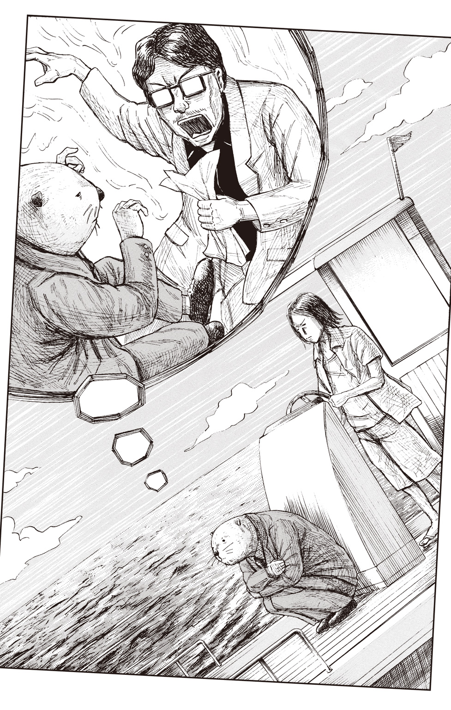
晴れた、良い日であった。波も穏やかで、船酔いもしない。そう考えると、まさに絶好の海日和ではないか。無理矢理でなく、仕事でなく、そして隣にいるのが田でなければ、の話であるが。
私は、これからのことを考えて気を重くした。あたりには、一隻の船も存在していない。穏やかな海が、かえって不気味に思えてしまうくらいだ。現場の海域は、恐ろしいほどに静まりかえっていた。
「平帆水産と少しでも関係のある船は、ことごとく撤退したようです。いや、させられたと言うべきでしょうか......。あ、アレじゃないっスかね？」
田が指差した。遠くから、けたたましいエンジン音が聞こえてくる。波を切り裂いて、彼方から猛スピードで走ってくる小型船が一隻。
「では部長、よろしくお願いします」
「......えっ？」
理解不能なひと言に、思わず田の顔を二度見してしまう。首がゴキッと音を立てた。
「な、なんで......？」
「僕は運転がありますので」
トントン、と舵を叩く田。
――資格がモノを言う時代......！
私は愕然とした。その間にも、船は猛スピードでこちらに向かってくる。気がつけば海の上......もはや逃げ場はない。私は覚悟を決めた。深呼吸をして、冷静になる。
「そう、私は抗議もとい交渉をしに来たのだ。あちらとて、話せばきっとわかるはず......。ここはひとりのサラリーマンとして、紳士的にビジネスの話をさせてもらおう」
そう呟きながら、モチベーションを高めていく。
「ブチギレてすぐに殴らないでくださいよ」
ハハハと緊張感の欠片もなく軽口を叩く田。モチベーションが急速に低下していった。
「そんな心配はいらないっ」
イラッとしながら、私はそう言い捨てる。田め。いつも私をどんな目で見ているのか、それが如実に表れる発言だ。
最初は小さく見えていた相手の船であったが、今やあちらの甲板の様子が肉眼で確認できるほどにまで近づいていた。
――まったく、殴るなどとんでもない。ここは平和的かつ紳士的に話し合うべきだ......。
やれやれと首を振る。田はやはり何もわかっていない。まっとうな話し合いを行うため、私は胸を張って堂々と甲板に立った。
田よ、見るがいい。あちらさんもまた、平和的に大砲を私に向けており、紳士的に弾を発射してくるではないか。とんでもない！
「話し合いの余地すらなかったっ！」
叫んだ瞬間、まるで海賊映画にでも出てくるような丸い弾が私の真横を通過していった。甲板が大破した。
短い悲鳴を漏らして、私は田に指示を出す。すなわち、このままでは格好の的である、と。なぜ船を出さない田、と。
舵などには目もくれずに、いそいそとライフジャケットを用意する田を発見。
「よ、田くん！ なんだそれは!? わ、私の分は......？」
「ありませんが」
「なんでっ!?」
「ラッコなら、海でも平気じゃないかなと......」
「百パーセントのラッコならばいざ知らず、私はラッコ人間だぞ!? 海に投げ出されたとき人間の部分がどう反応するか......それは私にすらわからない......っ！」
叫んで、私は田につかみかかった。思いっ切りロン毛を引っ張ってやる。
「よこせそれ！」
しかし田も激しく抵抗する。
「いやです」
ライフジャケットの奪い合い――勃発。
突如、激しい衝撃とともに船体が大きく揺れた。
「ぬわ――っっ!!」
ドサーっと転倒。全身をこれでもかと打ちつける。
「ぐわああ、い、痛いいいっ！ 脇腹をしこたま打ちつけた！ 私はもうダメだ......！」
叫びながらゴロゴロと転がってもがく。ちゃっかりライフジャケットを着用した田が、
「船底に穴があいて燃料が漏れていますね......」
冷静にそう呟いた。
一瞬にして、私たちの船は操縦不能に陥ってしまう。
「な、なんてことだ......」
目の前にはすでに、舳先をこちらの船の側面に突き刺すようにして相手の船があった。先ほどの衝撃は、体当たりによるものだったようだ。
そして、その船の甲板には、なんとも奇妙な風体をしたちょっと太めの中年男がひとり。腕を組んで立っていた。
男は、マグロを模した着ぐるみを着ていた。おそらくは特注品だろう。あんぐりと口を開けたマグロは、目の焦点があっておらず、なんとも間の抜けた顔をしている。
マグロの口から顔を覗かせて、オヤジが声を張りあげた。
「ハッハー、ヒラホーの船はみんなみんな沈んでしまえばいいのデース！」
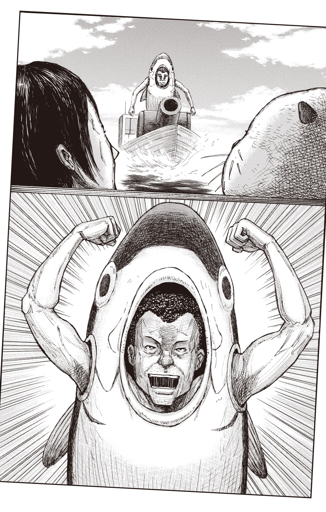
ハイテンションで叫ぶオヤジに、私は抗議の声を上げた。
「貴様、いきなり大砲なんて撃って！ これでは話し合いにすらならないじゃないかっ！」
「話し合い？ ノー、そんなものは必要あーりません。可愛い可愛いマグロちゃんを乱獲するヒラホーには罰を！ それは至極当然のことなのデース」
マグロ着ぐるみオヤジは、太い腕を組んだまま、私を見やると、
「ふむ......インターネッツで噂のラッコ人間というやつデースか......。ラッコはいけません。アレは魚貝類を食い荒らす意地汚い害獣デース」
わざとらしく溜息を吐きながら首を振った。
「こ、この野郎ッ！ 可愛い動物ラッコちゃん及び私の悪口はやめろっ！ なにがマグロちゃんだ。マグロなんて魚臭くてもってのほか！」
悪口を言われてイラッとした私は、オヤジに食ってかかる。しかし、私の魚臭いという発言に、オヤジもまたイラッとしたらしい。
「可愛い可愛いマグロちゃんは素晴らしい生き物デース。弾丸のような姿形、海中を魚雷のようなスピードで泳ぐ様、三日月型の尾ビレ......どれをとっても素晴らしい！ 卑しい生物ラッコなどとは比べものになーりません！」
ムキになったのか、マグロのいいところを列挙しはじめた。
「そしてマグロちゃんは――」
すぅ、とひと息。
「食べても旨いのデース！ パーフェクト！」
「喰うのかよ!?」
予想外の発言に、私は怒りに打ち震えた。拳をブルブルと振るわせながら叫ぶ。
「度重なるラッコへの悪口のみならず、人に獲るな保護しろと言っておきながら結局は自分が食べたいだけ......っ！ ゆ、許せん......っ！ そもそも、マグロなど生臭いだけ！ ビフテキこそ至高！ 焼き加減はウェルダンで！」
「僕はネギトロ巻きが好きです」
「......田くん、君は少し黙っているんだ」
「可愛い可愛いマグロちゃんを保護し、糞ラッコどもは絶滅に追いこむべきなのデース」
声高に叫ばれたそのひと言に、私はブチギレた。拳を岩石に変えて、飛びかかる。
「まずは世にも珍しいラッコ人間から絶滅させマース!!」
叫んで、オヤジは船に備え付けてあった機関銃の銃口を私に向けた。空中で完全にロックオンされる。同時に、銃口が火を噴いた。
「橄欖石ソレアイト――!!」
振り上げた拳を前に！ ウミィーと突き出す。乱射される機関銃。放たれる無数の弾丸。空中でバランスを崩し、私は相手の船の甲板に叩きつけられた。
「部長っ！」
背後から、田の叫ぶ声が聞こえた。
「ハッハー撃ち落としてやりまーした！ これですべてのマグロは我が社のものデース！」
ハイテンションに叫ぶオヤジ。
「我が社......だと？」
潮風が、立ちこめた火薬の臭いを吹き飛ばしてゆく。ゆらり、と私は立ち上がった。
「バ、バカなッ!? なんで無傷なのデースかっ!?」
「ラッコ人間怒りの橄欖石ソレアイト......たかが銃弾程度で砕けるわけがないだろう？」
言いながら、私はゆっくりと歩を進めた。靴音を響かせながら、甲板の上を行く。
「今、『我が社』と言ったな？ まさか、エコテロリストを騙り嫌がらせをしながら、自分の会社にこの海域で獲れるマグロを独占させるつもりだったのではないだろうな？」
じりじりと、岩石の拳をひっさげて、慌てふためくマグロ着ぐるみオヤジに詰めよる。
「ヒィ！」と短い悲鳴を上げて、再び私に銃口を向けたオヤジ。それが答えであった。
「お前のそれは、エコでなくエゴ！」
うおお、と私は銃口目がけて気合いの一撃。
「巨晶花崗岩――!!」
岩石の右ストレートが、オヤジもろとも、備え付けの機関銃を吹き飛ばした。
「それから田くん、私は平帆水産株式会社第一宣伝部部長、だ」
振り返り、田に向けてひと言。すべてが解決したかのように思えた。が、オヤジはしぶとかった。
「うう......我がハイパーグローバルマグロソリューションズ社のことを知られたからには、生かしておけまセーン！」
よろめきながら、最初に撃ってきた大砲を私に向けるオヤジ。
「やめろっ、こんな至近距離で！」
叫んだ瞬間――ドン！ ドン！ ドン！ と、胸の奥底にまで響きわたる音。大砲が連射された。雨のように降りそそぐ弾を前に、私の両手は斜方輝石橄欖岩に変化していた。
「ハルツバージャイト――!!」
叫びながら、岩石の拳を連打する。目にもとまらぬ速さで連打する。一秒間で言うと......ちょっと計算ができないがとにかく連打する。
ドドドドド！ と弾く。弾く。弾く。すべてを弾き返す。
弾かれて、四方八方に飛び散り転がった大砲の弾は、次々と船に穴をあけていく。そしてついには――
大爆発！ 衝撃で、私とオヤジは、そろって海へと投げ出された。
頭から勢いよく海に突入した私はというと、そのまま順調に浮上し、プカプカと海面を漂った。
「海ッ！ 馴染む......実に馴染むぞ！ ラッコの部分が勝った！」
さらばライフジャケット。私は生身でいける！
目の前では、大破した船が今まさに沈みゆこうとしていた。
一方、同じく衝撃で海へと投げ出されていたオヤジであったが、どうも様子がおかしかった。バシャバシャと暴れている。いや、あれは溺れているのだ。
「オーマイガッ！ オーマイガッ！」
「あいつ......泳げなかったのか......！」
「か、可愛い可愛いマグロちゃんは、泳ぎ続けなければ生きていけない魚......ミーもそうなりたかった......」
かなづちだったオヤジが、言いながら沈んでいく。マグロの着ぐるみが、水を吸っているのか。あれでは、普段泳げる人とてきついだろう。
船の破片とともに、近くを漂う浮き輪を発見した私は、それをオヤジに向かって放り投げた。
オヤジが、なんとか浮き輪につかまり咳きこんだ。
「ガハッ、な、なぜ......？ たったひとつしかない浮き輪をミーに......？」
信じられないものでも見るかのように、目を見開いたオヤジが、まじまじと私の顔を見つめてくる。
「なぜ？ 別に理由などない。ただ、ラッコ人間が浮かんでいるのに、マグロの着ぐるみを着た男は沈んでいく――そんなシュールな光景に耐えきれなかっただけ」
「だ、だが、ミーたちは今までずっとヒラホーに嫌がらせをしていたのに......」
オヤジの言葉に、私は遠い目をして答えた。
「かつて毛皮目的にラッコが乱獲され、絶滅寸前にまで追いこまれた時代があった......」
「!?」
驚愕するオヤジ。
「そ、そんな悲しみを抱えてなお、ミーに情けを......」
私は、キリッとした表情で、オヤジに言った。
「だって、マグロもラッコも、同じ海に住む仲間だろう？」
「同じ海に住む......仲間......」
ぐっと目を閉じて、オヤジは俯いた。そして――
「ラッコ人間に命を救われるとは......。もう妨害活動はやめマース......死神のノートを探すのもやめマース......」
自らの行いを後悔したのか、そう宣言した。
「本気で探してたのか......」
海の上をプカプカと漂いながら、私は呆れた。
しかし、何はともあれ、これで平帆水産への嫌がらせもなくなることだろう。私の仕事は終わったのだ。とにかく、会社に――いや、その前に陸に、帰らなくては......。
振り返ると、乗ってきた船が沈んでいた。
「あ......れ......？」
そういえば、田が船底に穴があいたと言っていたような気がする。マグロ着ぐるみオヤジの船も、すでに完全に沈んでしまっている。
「そ、そうだ......田ッ！ 田はどうしたッ!?」
見ると、遥か彼方――ゴムボートに乗って遠ざかっていく田の姿があった。
「あいつ......！ い、いや、それよりも、私は一体どうやって帰れば......？」
何か使えるものはないかと無意味にあたりを見回すも、かろうじて浮いているのは船の破片とマグロの着ぐるみを着たオヤジのみである。
「というか、ここはどこなんだ......」
どこまでも広がる水平線を眺めながら、私は呆然としていた。
衰弱の就寝
静かな夜。平和だ。夜はいい。仕事がないからな。
週刊少年ジャンプを読みながら紅茶を嗜む。これがラッコ人間の夜の過ごし方である。夜はいい。仕事がないからな。
さて、今日は早めにシャワーを浴びて就寝するとしようか。寝ることはなによりの至福である。果たして、寝ることよりも楽しいことがこの世にあるのだろうか。週刊少年ジャンプくらいしか思いつかんな私は。
とにかく寝ていたい。これがラッコ人間の総意である。仕事などしないでゴロゴロとしながら週刊少年ジャンプを読めればどれほど幸せだろうか......。最近、そのような哲学的なことをたびたび考える。夜はいい。仕事がないうえ、寝ていても誰にも文句は言われないからな。
そんな私であるから、睡眠の質というやつにはとことんこだわる。最近、高級な枕を買ったのだが、これがなかなかに良い。やはり値段だな。枕なんてどれでも同じだろうと思っていたあの頃の私はどうかしていた。この良い枕のおかげで、寝ることがまた一段と楽しみになった。
が、しかし――しかしである。ここ最近の熱帯夜は堪える。暑さでたびたび目が覚めてしまい、せっかくの枕も効果は半減だ。お気に入りのラッコちゃんパジャマにナイトキャップも、すぐに汗でびしょびしょになってしまう始末。
睡眠の質を大切にする身としては、新しいパジャマに着替えてさっぱりとしたり、クーラーをタイマー設定で稼働させたりなどの対策を怠らない。これで安眠できるというもの。夜はいい。静かでいい。真っ暗な部屋で、目を閉じ、耳を澄ませる。窓の外から聞こえてくるのは、夜の音だ。一日の終わりにリラックスしながらこうしているときがいちばん幸せだ。聞こえてくるのは、空気の流れる音、遠くを走る自動車の音、そして、蚊の羽音......。蚊は良くない！
がばっと飛び起きた私はというと、すぐに電気を点けた。煌々と輝く蛍光灯――そのあまりの眩しさに目を細めながら、私は蚊を探す。しかし当然のことながらすぐには見つからない。夜景が綺麗な高級デザイナーズマンション――その広さが仇となったか......。
このまま明るくしていても埒が明かないと悟った私は、すぐに電気を消した。暗くなったほうが蚊も出てきやすいだろうと考える。ガードを固め、全方位からの襲撃に対処できるようにする。蚊よ、次にその羽音を響かせたときが、お前の最期となると知れ。
待つこと二時間。
耳元で不快な羽音が！ うつらうつらしていた私は慌てて周囲を探る。蚊の姿はない。しまった......チャンスだったのに......。
さらに待つこと二時間。
耳元でまたもや不快な羽音が！ うつらうつらしていた私は慌てて周囲を探る。しかし見つからない。電気を点け、うなり声を上げながら部屋中をウロウロとする。が、すぐに無駄だと気づいて電気を消して崩れ落ちる。もうダメだ......眠い......。身体がダルい......。
さらに待つこと二時間。
もう限界だ......いつもいつも眠りかけた頃にまるで見計らったかのように突撃してくる。こちらのわずかな気のゆるみ――虚を衝いて襲ってくる。
私は、真っ暗な部屋でひとり頭を抱えた。これは果たして本当に蚊なのか。幻聴ではないのか。いまだ敵の姿すら確認できない。いや、だが、確かにいる。このまま眠りに就くわけにはいかないのだ。吸血されてしまう。
蚊取り線香だ。蚊取り線香さえあればそれですべてが終わる。しかしこの家には買い置きがない。行くのか？ 今から。パジャマを脱ぎ、わざわざ着替えて買いに行くのか？ 眠いのに。帰ってきたらまたシャワーを浴びるのか？ いや、相手は一匹......たった一匹......今すぐにでも叩き潰せばそれですべてが済む話......。
私の精神は、もはや限界に達しようとしていた。気がつくと壁に向かって睡眠の大切さについて説いていた。眠りたいのに眠れない。それどころかまもなく朝が訪れる。このまま出勤時間になってしまったら......。恐怖は際限なく膨れあがり、私の胃を悪くする。
ダメだ......たった一匹の蚊にラッコ人間人生はめちゃくちゃにされる。嗚呼、今まさにラッコ人間人生がめちゃくちゃにされようとしている。
極限状態のなか、私は幻を見ていた。ツヤっツヤの髪の毛をプルンプルンと伸ばした男が光の中に現れた。男が私に何かを手渡す。そうだ、これは――
はっと気がつくと私は手に蚊取り線香を握り締めていた。これは私の部下である入社八年ヒラ社員の田が、近畿地方への出張の際お土産として買ってきた謎の団子型蚊取り線香『スーパーニンジャケムリ』ではないか！ やはり田......お土産のセンスも駄目！ そう一笑に付して、戸棚の奥に放りこんでいたこの商品が、まさかこんなところで役に立つなんて！
私は田に感謝しながら、『スーパーニンジャケムリ』を発動させた。ようやくこれで安眠できる。憐れな蚊め、この激しい煙の中、どこまで耐えられるかな？ この目に激痛が走り喉の奥がヒリヒリとして吐き気までもよおし前が見えなくなるほどの煙の中、果たしてどこまで耐えられるかな？
耐えられませんでした。私が。
蚊も存在できなくなるが、なによりも人すらいられなくなる。それが、この蚊取り線香『スーパーニンジャケムリ』の力。
私は同居人――いや、同居人面ラッコの浜田くんを抱えて、慌てて外に飛び出した。
パジャマ姿のままマンションの外で呆然と立ち尽くす。私の部屋の窓からは、モクモクといまだ凄まじい量の煙が立ちのぼっている。消防車のサイレン音が聞こえてきた。住人の誰かが火事と勘違いして通報したようだ。
明らかに身体に悪そうな色の煙を、朝日が照らしていた。一睡もできなかった......。田......やはりあいつはこの私を舐めくさっている......。なんてものをお土産に渡すのだ。マンションの住人が外に飛び出してきて、毒ガステロと騒ぎだした。まったく、田め。他人様に迷惑までかけて......。
ところで、消防車と一緒に、遠くからパトカーのサイレン音も聞こえているような気がするのだが......。
煙の発生源は明らかに私の部屋......。なるほど......。しばらくは、眠れない日々が続きそうだ......。
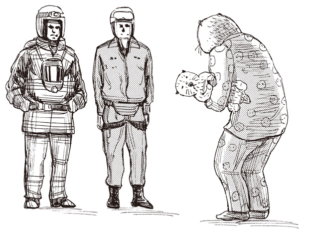
――満員電車。
この単語を聞いただけで、もううんざりしてくる。聞いただけでもうんざりするというのに、私たちサラリーマンは毎日それに乗らなければならない。この日もまた、ありえないほどに混雑した車内に、私はいた。
汗を流しながら、ぎゅうぎゅう詰めの車内で揉みくちゃにされる。せっかく綺麗にアイロンをかけたワイシャツも、これでは台無しだ。職場に着くまでにボロ切れにされてしまう。車内の混み具合は、もはや殺人的でさえあった。
ガタン、と電車が揺れ、全身を圧迫される。呼吸すらままならないこの状況――チラリ、と私は隣の車両の様子を確認した。
車両間を仕切る扉――その窓から見える隣の車両は、別世界であった。あちらの車両には乗客はちらほらとしか乗っておらず、皆が思い思いの席に座れている。つまるところあちらの車両は、ガラガラの状態であった。
なぜか？
その車両は、女性専用車両であった。
――なぜ、男性サラリーマンだけがこんなにも苦しまなくてはならないのか......。
再び、電車が揺れた。私は苦痛に顔を歪める。ぎゅうぎゅう詰めの車内では、満足につり革につかまることすらできない。人の波に揉まれ、圧迫される。前のロン毛野郎がうざい。揺れるたびに、そいつの髪の毛が顔面にあたる。
私は必死に顔を振った。が、しかし、ロン毛は鼻先をくすぐるのをやめない。私はもがいた。汗でロン毛が顔に張りついてくる。
ロン毛の猛攻。過酷だ。イライラする。朝っぱらからもう我慢の限界であった。ブチギレた私は、「うおお」とうなり声を上げた。
「プロピライト――!!」
ドギャーン！ 両手が変わる。岩石へと変わる。ロン毛の猛攻に反旗を翻す。
しかし、両手を変朽安山岩に変化させるも、あまりの混雑にもはや腕が上がらなかった。
それどころか、周囲の乗客にめちゃくちゃ怒鳴られた。
「おいアンタ！ こんな混雑した車内で何考えてんだ！ 早く戻せその岩石の拳！」
「邪魔なんだよッ！ ただでさえ獣臭いってのに勘弁してくれよっ！」
あまりの剣幕に、私は朝っぱらから漏らしそうになった。「ご、ごめんなさい......」と素直に謝る。本気で怯えたときには、素直に反応してしまうもの。
だが、当然のことながら、私の内心は穏やかではなかった。
――く、くそう、なぜ私が怒られなければならないのだ......。元はといえばこのロン毛野郎が......。
憎々しげに見つめていると、そんな私の視線に気がついたのかロン毛の男が振り向いた。
「あれ、部長」
それは私の部下――入社八年ヒラ社員の田であった。
「よ、田くん......！ なぜここに!? とりあえず私は平帆水産株式会社第一宣伝部部長だ。省略することは許さない」
ただでさえつらい満員電車、その車内でロン毛を駆使しさらに私を追い詰める存在――やはり田。むしろ、田以外にありえないとすら言えよう。ロン毛を見たら田と思え――古くから伝わることわざである。
ぷるぷると、私は怒りに打ち震えた。
「おっ、お前だったのか......髪の毛をこれでもかと伸ばしくさって......！」
カッと目を見開いて叫ぶ。
「その髪の毛、毟り取ってやる！」
私はロン毛をロックオンする。すると――
「な、なんだこれは......っ!?」
気がつくと、前後左右すべての乗客がロン毛になっていた。私はロン毛によって包囲されていた。いや、気がつかなかっただけで、もしかすると最初からそうだったのだろうか。そう思えてしまうくらい、ロン毛に囲まれていた。
くるりと私の方に向き直り、ロン毛が次々と名乗りを上げた。
「私は医師の田」
「私は俳優の田」
「私は花屋の田」
「よ、田がたくさん......!? なんなんだ......!?」
振り向く者すべてが田。その様、まさに田祭り。
意味不明な事態に、私は混乱した。いつの間にやら、私の周囲は数多の田たちによって取り囲まれていたのだ。
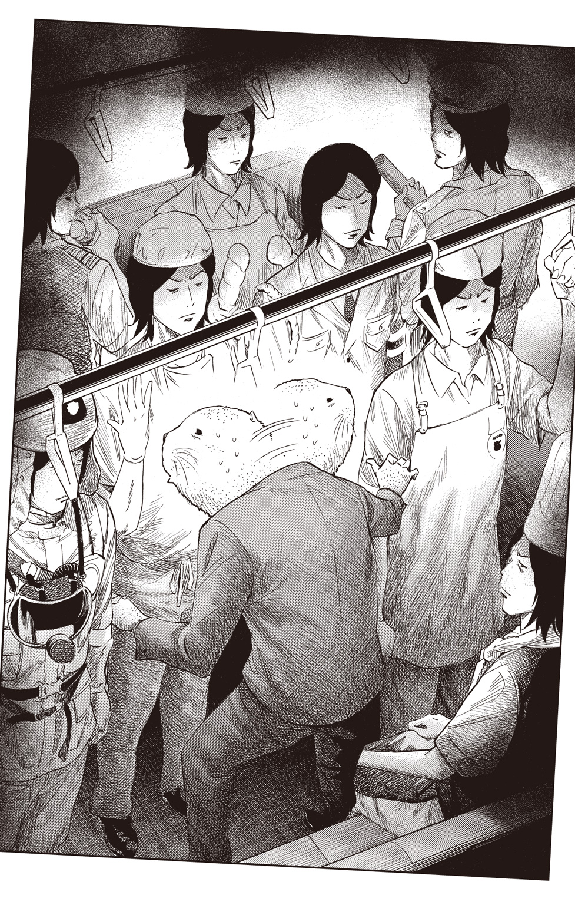
「私は外交官の田」
「私は職業軍人の田」
「私は宇宙飛行士の田」
「おい、スゴイ職業のやついるぞ！」
まだまだ、田のラッシュは止まらない。ずいっと前に躍り出ながら、次々と田が名乗りを上げる。
「私はシステムエンジニアの田」
「私はゲームクリエイターの田」
「私は働いたら負けかなと考えている田」
「......お前は働け。ひとりだけラクをするんじゃあない。というか、なぜ通勤電車に乗っているんだ君は？」
そして、最後の田が名乗りを上げる。
「そして私がマンガ編集者の田」
「貴様だけは絶対に許さん。次の駅で降りろ」
私は、あるマンガ家が記した魂のポエムを思い出していた。
田
僕にとっては
ただの言葉ではなく
ただの名前でもない
それは
僕が最も恐れおののく
前世で何かの因果があったと
思わざるを得ない対象
それが田
「これではまさにあの有名な詩と同じ状態！」
困惑を隠しきれずに、私は叫ぶ。前後左右すべての田が私にロン毛をなびかせた。ファサーっとロン毛がまとわりついてくる。もはやホラーの絵面であった。
「うわあああ、や、やめろ......っ！ はっ!? まさかまさか、ここは......ッ！」
ここで、私は気づく。衝撃的なある事実に。
「――よ......田専用車両......っ!?」
『次は～田～次は～田～』
「駅名までっ!? あ、悪夢だ......悪夢だあああああっ!!」
幾度となくくり返されるアナウンス。悲鳴を上げる私を乗せて、電車はどこまでも走り続ける......。
げんなりとした表情のまま、私はベッドの上で呟いた。
「悪夢だった......」
窓の外からは、チュンチュンとスズメの声。このうえなく最悪な目覚めであった。見ると、泥棒にでも入られたのではないかと思うほどに、部屋の中がめちゃくちゃに荒らされていた。壁にも、ボコボコと穴があいている。
「また......やってしまった......」
のそり、とベッドから降りた私は、惨状を前にして、がくっと膝をついた。
「この様子だと、斜方輝石橄欖岩......ハルツバージャイトか......」
両手を床について、嘆く。壁に穴をあけたのは、紛うことなく悪夢にうなされて暴れたであろう睡眠中の私であった。部屋の荒れ具合、壁の穴の様子などから、ハルツバージャイトを繰り出していたことが容易に推測できた。
――ハルツバージャイト。
それは、読者の皆様にとっては原作マンガでお馴染みの大技！
機関銃のように一瞬にして拳の連打を叩きこむ必殺技！
岩石に変化させた両拳でもって君が泣くまで殴るのをやめないッ！
悪夢を見ると五回に四回は発動する！
そんな技。それがこのハルツバージャイトである。
ちなみに残りの一回は橄欖石ソレアイトだ......。
「また壁に穴が......もう嫌だ......」
着替えるのを後回しに、パジャマ姿のまま私は買い置きしておいた可愛い可愛いラッコちゃんポスターを壁に貼った。ささっと穴をなかったことにする。
そうこうしているうちに出社時間が近づいてくる。まだ着替えてすらいないというのに。
「あああ、行きたくねー。満員電車乗りたくねー。ううっ、ど、土曜日はまだなのか......まだ水曜日ッ!?」
カレンダーを見て、私は悲鳴を上げた。
会社のデスク。その上には、どっさりと書類の山が築かれていた。これでもかと積み上げられた書類で、私の机は埋め尽くされていた。
それだけならまだ死ぬ――いや、それだけならまだしも、部下の田が次々と調子に乗って書類の束を運んでくるのだ。君の前世は働きアリなのか？ と思わず訊ねたくなるほどに運んでくるのだ。
田は言う。
「この企画書に目を通しておいてください」
「それからこれにハンコを」
「あとこれにも」
物事には限度というものがある。文字通り山のようにある仕事量に、私はすでに限界を感じていた。
「もうダメだ......通勤ラッシュだけで一日分......いや、三日分くらいの体力を消費するというのに、こんなに働けるはずがない......！ これ以上ハンコを押したら、きっと腱鞘炎になってしまう！ 二度とハンコが押せなくなるかもしれない！ それでもいいのか田くん？」
ハンコを持った腕を押さえながら、私は田に言った。田は、しばらく静止したのち、
「......あとここにもハンコを」
スルーした。書類を指差しては、私の前に重ねていく。
――こいつ......！
日本に田は多いとは、よく言ったものだ。夢の中にまで出てくる田。私に何か恨みでもあるに違いない。
ただでさえ、今日は夢の中と現実で、実質二回、満員電車を経験しているのだ。私の体力気力は、すでに目覚めた瞬間に尽きているのだ。
満身創痍で、私は呻く。
「一体なぜ働かなくてはならないのか......食べたいときに食べて寝たいときに寝るのがいちばんだ......そうは思わないか田くん？」
「それとこの書類にもハンコを」
――こいつ......！
「それにしても田くん、今日の仕事はいつにも増してきつい。腱鞘炎どころかこれ以上やったらきっと血尿が出るだろう......」
まったく表情を変えない田に、私は、ゴホゴホと口元を押さえながら「ここのところ変な咳が......」と体調不良を訴えてみせた。
はぁはぁと息を切らして、私は問う。田に問う。
「もし......血尿が出たら......どうする......？」
「はあ、泌尿器科行けばいいんじゃないっスか？」
即答であった。
「なんなんだ君はッ！」
ダン！ と思いっきり机を叩いて、私はブチギレた。積み重なっていた書類がドサドサと雪崩のように床に落ちていく。
「上司が苦しんでいるというのになにが『はあ、泌尿器科行けばいいんじゃないっスか？』だ！ ほんと、なんなんだ君は!? そんなこと上司に向かって言う部下は、世界で君だけだよっ！ 鬼！ 悪魔！ 田！」
ハーハーと呼吸を荒くして、私は叫んだ。拳がビキビキと音を立て岩石に覆われていく。
しかし、田は表情ひとつ変えなかった。床に落ちた書類を手際よく拾い集め――
そして――
ドサッ、と再び私の前に積み上げた。
私は頭を抱えて、悲鳴を上げた。
「あああもう嫌だっ！ 働きたくない！ 休みたい！ 当分休みたい！ 二年は休みたい！ 私が休みたいと叫びだすたびに持ちネタなどと言う読者もいるがとんでもない！ 私は本気で休みたいんだ！ 持ちネタなどではない......断じて！」
ひとしきり叫んで、私は少しだけ冷静さを取り戻した。呼吸を整えながら、もがき苦しむ私を冷めた目で見つめていた田に訊ねた。
「田くん、仕事は楽しいか？」
「はあ、まあ、結構楽しいです」
こんなものが楽しいなどとは、田よ、お前は人か魔か？ というか、正気か？ とても正気の沙汰とは思えない。
「私は楽しくないよ！」
「部長！」
楽しくない――そう声高に叫んだ瞬間、それまで表情ひとつ変えなかった田が声を張りあげた。突然のことに、私はビクッとその身を震わせてたじろいでしまう。
「な、なんだね......？ それから私は平帆水産株式会社第一宣伝部部長だ」
言いながらも、私は内心ビクビクしていた。こんなにも真剣な表情をした田を見るのは初めてであった。常に私のことを舐めくさった顔で見つめているいつもの田とは明らかに違う。私は、触れてはいけない何かに触れてしまったのだろうか......。
ずいっと田が一歩前へ。
「ここ、ハンコ押し忘れてます」
さっと拾い上げた書類を田が差し出してきた。もう、我慢の限界であった。
「こ、こんな会社辞めてやるッ！」
気がつくと、私は常に持ち歩いている辞表を懐から取り出して、長髪ハンコ野郎の顔面に叩きつけていた。スパーンと景気のいい音があたりに響きわたる。
肩を怒らせながら、私がハーハーと息をついていると、部屋の入り口から突如罵声を浴びせられた。
「ふんっ、辞めたければさっさと辞めるがいい！ こちらとしても、ラッコ人間がいなくなってくれれば清々するわ！」
「お、お前は......っ」
そこには、私のことをなにかと目の敵にしているあの役員の姿があった。腕を組んで、開け放たれたドアに寄りかかっている。
「なんでこんなところに......」
「ふん、たまたま近くを通りかかったからな、ついでにラッコ人間の様子でも見学していこうと思ったわけだ」
「な、なぜそんなことを......？」
「ラッコ人間の無能ぶりは、見ていて飽きないと社内中で評判になっているからに決まっているだろう？」
ククク、と嫌味たっぷりにそう口にする役員。
――なんて嫌な性格の男だ......っ！
私は思わず辟易してしまう。役員はほくそ笑みながら、ずかずかと部屋に入りこんでくる。そして――
「さあ、どうぞ？ お引き取りください」
大袈裟な動作で恭しく入り口を指し示した。
「.........？」
私がポカンとしていると、役員は再び大袈裟な動作で騒ぎたてた。
「これは驚いた！ 辞めると言って辞表まで叩きつけたことをもう忘れたのか？ まったく、これだからラッコ人間は......」
やれやれと首を振って、そんなことを言う。私は、あたふたとしながらも取り繕った。
「い、いや、あれは、勢いというか、言葉のあや的な――」
「そんな馬鹿な!? まさかラッコ人間は、一度口にしたことを変えるつもりなのか？ おいおい、一体どうなっているんだ第一宣伝部は？ 常識的に考えて、社会人にそんなやついるはずないよなあ？」
ニヤニヤとしながらねちねちといびる役員。まるで獲物を前に舌なめずりするヘビのようだ。
私が言葉に詰まっていると、役員は言った。
「ふん、まったく、だからラッコ人間は駄目なんだ。ああ、そうか。まだよく人間の言葉がわかっていないんだろ？ そうなんだろ？ な？」
その瞬間、私はブチギレた。一瞬にして拳が岩石に変わる。拳を振りかざし役員に殴りかかる。
「部長っ！」
部屋中に響きわたる声。ぴたり、と顔を引き攣らせた役員の鼻先で、私の拳は止まる。しんとした室内に、荒くなった私の呼吸音だけが響きわたっていた。
「ど、どうした......？ 殴らないのか？」
よく見ると役員は、うっすらと笑みを浮かべていた。騒ぎを聞きつけて、部屋の入り口には大勢の社員が集まっていた。
――わざと、私を挑発したのか......。
田の声に、かろうじて理性を取り戻すことができた。私は田に視線を移す。キョンシーのように顔面に辞表を貼りつけたまま、田が頷いた。
「さあ、大人しく辞めるか殴って辞めさせられるか、選ぶんだな。証人もいる。監視カメラもあるぞ」
なおも私を挑発する役員。挑発に乗ったら相手の思うつぼだ。それはわかっている。しかし、とてつもない怒りによって岩石化した拳は、収まらない。力の行き場を失ったまま、拳がぶるぶると震えだした。
「ふんっ、できないのか臆病者め。しょせんお前など口だけのチキン野郎なのだ！」
「くっ、うう、く、う、ううう......」
叫び罵る役員。発作に耐える私。
必死に拳を押さえ、ギリギリと奥歯を嚙み締めて、もがき苦しみながら耐える。が、次のひと言が決め手になった。
「いや、チキン野郎じゃないな......お前はチキンラッコ野郎だ！」
「チ、チキンラッコ野郎!? うう、く、ううう......なっ、なんかよくわからない合成怪獣みたいになるからやめろおおおおおおおお！」
目の前が真っ白になったかと思ったら、バリーンと窓が割れていた。気がつくと、行き場を失った拳のパワーで窓を叩き割っていた。私はそのまま窓の外に飛び出していた。落下して、そして、大地に拳を叩きつけて着地する。
「も、もう限界っ！」
でかでかと出現したクレーターから逃げるように、私は会社から走り去った。
「辞表は受理しておいてやるからなッ！」
そんな役員の声が追いかけてくる。役員の高笑いを背に受けながら、私はその場をあとにした。
「どうしよう......今さらもう、戻れない......」
高級デザイナーズマンションに帰ってきた私は、部屋に入るとそう言って頭を抱えた。勢いでとはいえ、辞めると叫んで辞表を提出――それを役員に聞かれ、さらにはそのまま役員に手を上げてしまった。田のおかげで殴らずに済んだものの、そののち窓を割り会社の前に馬鹿でかいクレーターをこしらえたうえ、まだ定時になっていないというのにそのまま逃走――おまけに役員は私の辞表を受理すると言っていた。
「......最悪だ」
これから先どうすればいいのだろうか......。ふと、机の引き出しを開けて、中から通帳を取り出す。ぱらぱらとそれをめくり、貯金を確認した。
幸いにして、通帳にはそれなりの金額が入っていた。どうだろうか、これならば、一生働かなくても生きていけるだろうか......？ 残りのラッコ人間人生、やっていけるだろうか......？
じっと残高を見やる。
私は、無心になってゼロの数を数えた。目を皿のようにして数えた。数えながら「ウフフ......」とほくそ笑む。そう、それなりの金額があるのだ。大丈夫だ。これならばいける！
「いける......いけるぞ......生きて、いける......！」
ゼロの多さが私に勇気を与えてくれる。なにか楽しく、明日が明るくなってきた。これは最悪どころか、むしろ――
「最高だ！ 私は今、自由なんだ！」
そのことに、気づく。自由......なんて素晴らしい響きだろうか。もはや毎朝あの殺人的な満員電車に乗ることもないのだ。そのことを考えると、自分が勝ち組に思えてきた。
こうして、私の勝ち組ライフが華麗に幕を開けるのであった。
好きなだけ寝る。もう目覚まし時計に文句は言わせない。昼過ぎにのそりと起きて、デリバリーで好きなものを注文する。めんどくさいので買い物には行かない。弁当、ピザ、ラーメン、カレー......家から一歩も出なくとも、いつでも好きなものを食べることができるのだから。
テレビを観ながら食べて、終わったらゲームをする。ネットのチェックも欠かせない。それだけで、外はすぐに真っ暗になる。だが、好きなときに寝て好きなときに起きればいいのだ。徹夜でネットとゲームに興じ、次の日はごろごろして過ごすことにする。それだけの話。実に単純な話なのだ。会社がなければ、明日のことを考える必要はない。動けなくなるまで食べて、寝たいときに眠るだけ。これこそが人間、いや、ラッコ人間どころかありとあらゆる生物の本来あるべき姿であると確信する。
ネットは、便利だ。食べ物だけでなく、なんでも手に入る。ボタンひとつで、早ければ翌日には商品がマンションに届くのだ。
同時に、ネットの世界は広かった。ここには「飽きる」という言葉はない。日々新たな情報で満ち溢れ、いつ何時でも私を楽しませてくれる。目まぐるしい電脳世界では、退屈している暇などない。
すべてが、自由時間であった。私はそれを全力で満喫する。この命を賭して、自由を謳歌する。限りある命の時間――そのすべてを好きに使えるのだ。
もう、何もかもどうでもよくなってくる。私は床にグデーンと寝そべりながら思う。
今となっては、平帆水産株式会社第一宣伝部部長などという肩書きにこだわっていたかつての自分が馬鹿みたいであった。むしろ、辞めて清々したと言っても過言ではない。役員には感謝したいくらいだ。大切なのは、やはり思いきりである。こんなにも解放感を味わえるのであれば、もっと早く辞めていればよかったのだ。今から思えば、わざわざ苦しい思いまでしてあんなに働く必要などどこにあったのだろう。私がこうして寝ていても、世界はこれほどまでに平穏で何ひとつとして変わらないではないか。食べたいものは部屋まで運んでもらえるし、欲しいものは指先ひとつですぐに手に入るではないか。
あの会社が、異常だったのだ。あそこは、ラッコ人間をこき使いすぎだ。
だが、今の私は、もはや会社という名の束縛から解放されし者。選ばれしラッコ人間なのだ。なんだろうこの万能感は。何ひとつとして気にかけることがなく、何ひとつとして悩むこともない。
「私は自由だーっ!!」
大の字になって、叫ぶ。
しかし、すぐに私の自由は色褪せはじめていった。
どさどさとたくさんのダンボールが届いた。どれも、私がインターネット通販で購入したものであった。画面を見て、商品の説明を読んで、さらにはその商品の口コミまで調べて購入したものである。早く届かないものかとわくわくして待っていたのだが――
「......なんか、なあ......」
実際にそれを手にした途端、当初のわくわく感はどこへやら、興味を失ってしまう。
「というか、そこまで必要なものでもないような......」
気がつくと、山積みになったダンボールを見つめながら、私は溜息を吐いていた。
「なんか、めんどうだな......」
ほとんどのダンボールは開封もせずに、そのまま放置することに。それどころか、欲しいものであったはずなのに、邪魔だなとすら思うようになってしまう。
私は気を取り直して、テレビを観てまったりと過ごすことにした。そう、時間はいくらでもあるのだ。私は自由なのだから。
テレビをつける。チャンネルを回す。ひたすら回す。私は新聞のテレビ欄を確認した。地上波だけでなく、衛星放送の欄も確認する。
観たい番組が、ひとつも放送されていなかった。
「また同じようなドラマが......いや、これは再放送か......？」
イライラしながら、別のチャンネルに変える。どうでもいい話題。取るに足らないニュース。ギャアギャアとうるさいだけのバラエティー番組。芸人が裸になって「ラッコの物真似しまーす」と叫んで石を振り回しはじめた。もう、限界だった。それを見てゲラゲラと笑うタレントたちの、なんと不愉快なことか。
「なんだこの芸人は！ つまらーん！」
叫んで、気がつくと、テレビが破壊されていた。
「い、一体何が......!? いけない、どうも最近怒りっぽくなっているような気がする......」
部屋の中をよろよろと歩きながら、私は呼吸を整えた。深呼吸して、リラックスする。テレビはまたインターネット通販で買えばいいだろうと気持ちを切り替えて、私はゲームを楽しむことにした。テレビがなぜか木っ端微塵になってしまったので、残念ながら据え置き機は使えない。しかし、携帯ゲーム機とそのソフトもたくさん購入してあるので問題ない。よし、ゲームで遊ぼう。私は自由なのだから。
二十分後――
そこには、元気に携帯ゲーム機を叩き割る私の姿が！
「ま、また負けた......！ なぜだ!? ベリーイージーなのにッ！」
はっ、と気づく。またやってしまった......。負けるとイライラする。イライラすると手が岩石に変わる。手が岩石に変わるとゲーム機が壊れる。当たり前だ。この世の真理と言ってもいいくらいに当たり前だ。だがしかし、また買い直せばいいのだ。それだけのこと。私は自由なのだから。
テレビ、ゲームときて、次に私はネットをやることにした。パソコンを起動させる。昂ぶった気を落ち着けるため、『救世主ラッコ伝説』のホームページにアクセスする。お気に入りから飛ぶ。日夜私のファンが書きこみを行い、誰もが私のことを褒め称えてくれるこのサイトを見れば、イライラとした気持ちも一瞬にして吹き飛ぶというもの。アクセスするたびに心穏やかになる楽園のようなサイト――それが『救世主ラッコ伝説』なのだ。
しかし、穏やかな顔でページを開いたその瞬間――私の顔は凍りついた。
「あ、荒らされている......っ！」
私は愕然とした。ファンのみんなが、ラッコ人間の素晴らしさについて語り合う素敵な掲示板が、びっしりと私の悪口によって埋め尽くされていたのだ。
掲示板の荒れようは、ひどいものであった。
『ラッコ部長はインチキＣＭで金儲けしている』
『落ちぶれた救世主』
『てかＣＭ糞ツマンネ』
『放送中止にしてほしい...... 不快だからテレビ消す』
『ぶっちゃけまだテレビとか観てるやついんの？』
「な、なんてことだ......」
画面をスクロールさせる。ずらーっと並んだネガティブな言葉の数々。なぜこのようなことに......。ここに書きこむ人たちは、みな私のファンなのではなかったのか......。
私個人に向けられた数多の名も無き悪意に、心臓がきりきりと痛んだ。
「く、ううっ、う......。ら、楽園を取り戻さねば......っ」
胸を押さえつつ、私は必死にカタカタとキーを叩いた。次々と、書きこんでいく。
『ラッコ11号のＣＭ面白っ！ ラッコ人間は新世界の神！』
『全国五〇〇万人のラッコ11号ファンを代表して言う！ ラッコ人間は最高だ！』
『私もラッコ人間好きだわ カワイイし結婚したいくらい（笑）』
『やはりラッコ人間は人気があるな 今度俺もグッズを買おう』
『おう そうしろそうしろ グッズは人気ですぐに売り切れちまうからな』
『ラッコ11号？ いいえ国民的アイドル・ラッコ11号です』
『フガフガ ワシも孫もラッコ人間のファンじゃよフガガガガ』
「見るがいい、これぞラッコ人間七変化！」
掲示板に書きこんでいく。ネガティブな流れをポジティブに！
が、しかし――
『なにコイツ？ ＩＤ見えないのかよ』
『ミエミエの自作自演やめろカス！』
『きめぇ 意味不明なうえまったくおもしろくないし』
私の書きこみに対する返信は、まったく予期せぬものであった。額にうっすらと汗を浮かべながら、私は次々と画面上に現れる返信を読んだ。
「なっ、なぜバレているんだ......？ ＩＤ？ 一体なんのことだ？」
食い入るようにして画面を見つめていると、さらに驚くべきひと言が表示される。
『こいつ部長じゃね？』
心臓が、飛び跳ねた。だらだらと冷や汗が止まらなくなる。呼吸困難に陥る。一体今何が起こっているのか、わからない。おろおろとしながら、私はなんとか誤魔化そうと新たに書きこみを加える。音速の速さで打ちこんでクリック！
『部長とかないわー それに私は平帆水産株式会社第一宣伝部部長だしー』
「『私は』って書いちゃったッ!?」
新しく画面に表示された自分の書きこみを見て、私の目は飛び出しそうになる。
「ああっ、どっ、どうやって消すんだこれっ!?」
あたふたとしている間にも、画面が文字で埋め尽くされていく。名も無き誰かの書きこみによって満ち満ちていく。
『ラッコ部長キターッ』
『本物キターッ』
『本 人 降 臨』
『ふう まったくお前ら悪口ばかり書いて...... あ 僕はずっとファンですよ』
『......と言っているやつがいちばん悪口を書きこんでいた件』
『わーこわい 岩石の拳で殴られちゃいまちゅよー（迫真）』
『おいおいお前ら 部長怒らしたらマジでヤバイからな（爆笑）』
『よっしゃ 今からみんなで部長の家に遊びに行こうぜ』
『部長に捧げるハマグリを忘れるなよ 大変なことになるぞ』
『両津はどこだー』
『部長またキターッ』
『それ違う部長だから（笑）』
次々と現れる書きこみに、私はガタガタと震えていた。まさに異常事態であった。私が書いた複数の書きこみを見事に看破し、さらには私を焦らせることによってミスを誘い本物のラッコ11号であると画面越しに見抜くその手腕――
そこから自ずと導き出される答え......それは――
「こいつら......ハッカーだ......」
サァーっと血の気が引いていくのが自分でもわかった。間違いない。私は、常人が踏みこんではならない領域にいる......。
画面の中で巻き起こる部長コール。真っ赤になった『部長祭り』の文字で、画面が一気に埋め尽くされた。
私は悲鳴を上げた。そして――
「ネット怖いッ！」
叫んだ瞬間、岩石の拳でモニターを貫いていた。火花が飛び散り、一拍遅れてボンッと画面から白い煙が立ちのぼった。
「あ......」
貫通させた岩石の拳を引き抜く。モニターにはすでに何も映っていない。ぽっかりと穴があいて、向こうが見通せるようになってしまった。
「い、いかん......これも買い換えねば......」
それもこれも、すべてあの名無しのハッカー集団のせい――まったく、私は部長ではなく平帆水産株式会社第一宣伝部部長だと何度言ったらわかるのか......。
モニターの前を意味もなく行ったり来たりしながら焦る私であったが、そこでピタリと動きを止めた。
そして気づく。
「そうか......もう、部長ですらないんだ......」
木っ端微塵になって散乱したテレビの破片、まっぷたつになったゲーム機、特大の穴があいたパソコンのモニターに囲まれて、私はひとり部屋に立ち尽くしていた。
グゥ～、とお腹が鳴った。
「今日は......ビフテキにするか......」
もはや、食べることくらいしか楽しみのなくなった私は、最高級の肉を購入しようと決意する。さすがにこれはネットで――というわけにもいかず、というか、画面がブチ抜かれていて使いものにならず、久々に外に出ることにする。
気を取り直し、さっそくマンション近くのＡＴＭで現金を下ろし、なにげなく通帳をめくったその瞬間――
「あ、あれ......？ ちょ、貯金がいつの間にか......」
残高の数字を見つめながら、私はその場で固まった。
「ポ、ポルシェのローン？ マンションのも？ それから......ぜ、税金？」
嫌な汗が、流れる。目眩に似た感覚に襲われる。
「わ、忘れてた......」
空腹などとうに吹き飛んで、顔面蒼白になったまま私はマンションに戻っていた。よろよろと浴室に向かう。
浴槽の縁にもたれかかり、私は落ちこんだ。
「私は一体どうすればいいんだ浜田くん......」
浴槽に浮いている人面ラッコの浜田くんに訊ねる。人面ラッコの浜田くんは私の友人で、今はこのマンションで共に暮らしている仲だ。
私と浜田くんが共に暮らすきっかけとなった「すみれＴＶ」の一件は、今でも忘れられないものだ......。人面ラッコの浜田くんを捕獲し見せ物にした「すみれＴＶ」......。トラックで局に突っこみ救出に向かった私......。
私は遠い目をしながら過去を懐かしんでいた。
しかし当然のことながら、私の問いに浜田くんは何も答えてくれない。プカプカと浮かびながら、石を使ってハマグリを叩く浜田くん。
テレビ、ゲーム、ネットのくり返し。食べて寝て食べて寝てのくり返し。
今や私の脳は、すっかりダラけきってしまっていた。
頭に霞がかかったような感覚のまま、私はその場にへたりこんでいた。気力がない。お金もない。考える力さえない。
もはや私は立ち上がることができなかった。
真っ暗な浴室にハマグリを叩く音だけが、むなしく響きわたった。
ざわめき。喧騒。行き交う人々。止むことのないアナウンス。電車の走る音。
ぼんやりと、私は人の流れを見つめていた。
気がつくと、私は駅構内にいた。呆然としながら、背広を着てベンチに座っていた。身体に染みついた習慣というものは恐ろしいものだ。半ば無意識に、ここまでやって来てしまったのか......。
ちょうど、朝の通勤時間だった。駅は人で溢れかえっていた。
お金もなく、やることもない。人の流れとともに、ただただ時間だけが流れていく。
けたたましい発車ベルが鳴り響く。また一本、電車が発車していく。
――今の電車もまた、満員なのだろう......。
ふと、そんなことを思う。
不思議なものだ。あれほどまでに嫌だった満員電車が、なぜか今となっては恋しく思えた。しょせんこの世は無いものねだりなのか......。
ラッコ人間は、孤独だ。
道行く人誰もが無関心のまま通り過ぎていく。
「あっ、ラッコ11号だ」
「本当だ。やっぱり本物はキモイな～」
――誰もが、無関心だ......。
それがこの世界の姿であった。世界は、街は、無関心によってつくられ支えられていた。通り過ぎていく人皆が、すれ違う人すべてが、お互いに無関心のまま、ただ前だけを見て進んでいる。
だが、世界の真の姿はそれとは違っていた。
道行く人誰もがそれぞれの居場所に属していた。家族、友人、会社......今は前だけを見つめて足早に歩みを進める人たちにも、きっと属する場所があるのだ。そこに向かい、そこへ帰る――そんな場所が。
今の私に、果たして一体何があるというのか。
無駄に高級でだだっ広い、誰も訪ねてこないデザイナーズマンションか？
その浴室で無言のままハマグリを叩き続ける浜田くんか？
だが、誰を呼ぶわけでもなく、ひとりきりで過ごす高級デザイナーズマンションに、一体どれほどの価値があるのだろう。
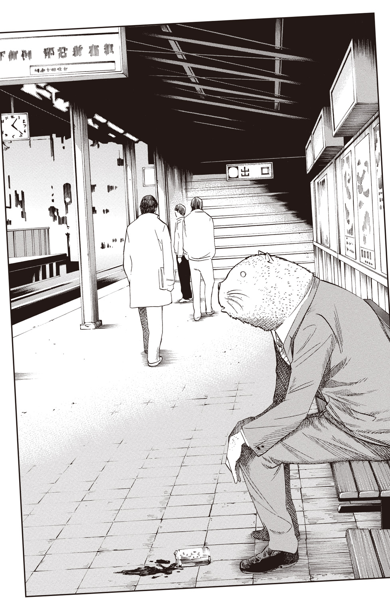
ラッコとして交流することはできても、人として話し合うことのできない浜田くん......人としての私は、では一体どうすればいいのだろう。
うなだれる。私は、後悔していた。
――辞表なんて......出さなければよかった......。
ただでさえ孤独なラッコ人間。私は、ようやく手に入れた人との繫がりを自らの手で消し去ってしまったのだ......。
なんの目的もなく、見てくれだけサラリーマンを装って、座りこむ私。そんな私の居場所は、もうこの世界のどこにもないのだ。
――本当に、ひとりになってしまった......。
かりそめの自由――これがその代償。
時間はとうにお昼を過ぎていた。俯いたまま、じっと電車へと向かう革靴の群れを眺める。すり減った革靴たちが、足早に通り過ぎていく。
と、見覚えのある革靴が、私の前で歩みを止めた。
そこには――
「田くん......」
顔を上げると、部下――いや、元部下・田の姿があった。田は、いつもと変わらぬ無表情で、私に言った。
「こんなところで、何をしているんですか部長」
「今となっては元・平帆水産株式会社第一宣伝部部長だ......」
首を振って、自嘲する。
田は、センスは悪いがそれなりに――いや、割と......というか、かなり優秀なので、私がいなくなったことで、きっと出世したことだろう......。
その田がなぜこんなところにいるのだろう。私は伏し目がちに呟いた。
「休みたい休みたいといつも口にしていた。でも、最初はそれだけで満足だった......」
仕事があるからこそ休みがあって、仕事の苦しみがあったからこそ休みの幸せがあったのだ。本当は、もっと早くにそのことに気づくべきだった。そんな当たり前のことに――当たり前ながらもいちばん忘れてはならないことに辞めてから気がつくなんて......。辞めてからでないと気がつけないなんて......。なんと愚かな......。
「気がつけば永遠に休み......私はダメ人間だ......ラッコダメ人間だ......」
だが、今さら気がついてももう遅い。それでは、遅いのだ。
私は俯いて目を閉じた。
そんな私に、田が静かに問いかける。
「では、有給休暇は今日で終わりにするということで、いいんですね？」
「......え？」
顔を上げた私の目に飛びこんできたもの――そこにあったのは、そこにあるはずのないあの辞表であった。
田が私の辞表を持っていた。
「な、なぜそれを......？ 役員が受理したのではなかったのか......？」
目を見開いて驚く私に、
「どうせすぐに帰ってくるに決まっていますから。伊達にあなたの部下をやっていない」
苦笑しつつ田が答えた。田は続ける。
「以前、『仕事は楽しいか？』と訊かれたことを覚えていますか？」
「ああ、君は楽しいと答えた」
「いつもいつも、働きたくないやりたくないと泣き言を言いながらやっているのに、最後にはきちんと仕事をし結果を出す。そんな上司は他にいない！ そしてそんなあなたが上司だから、僕は楽しく働くことができるんです」
ざわめきにも、喧騒にも、行き交う人々の靴音にも、止むことのないアナウンスにも、電車の走る音にも負けないくらい声を張りあげて、田は言った。
そして――
「ラッコ11号第一宣伝部部長」
まっすぐに私を見つめながら、田が私を呼んだ。
目の前に辞表が差し出される。
「行きましょう、会社に」
ゆっくりと手を伸ばして、私はそれを受け取る。
「すまない田くん......すまない......」
辞表を破り捨て、私は立ち上がった。
田とともに、私は久しぶりの出社を果たした。
見慣れたエントランスを抜けて、いつものエレベーターに乗って、変わらぬ廊下を歩けば、使い慣れた私の部屋が待っている。
部屋は、何ひとつとして変わっていなかった。しかし、隅々まで掃除が行き届いており、塵ひとつ落ちていなかった。いつ私が帰ってきてもいいように、私が会社を飛び出したその日のままに、まるで時間が止まっていたかのようにそのままの状態が保たれていた。
そう、まるで時間が止まっていたかのように、寸分の狂いもなく積み上げられた書類もまた、そのままであった。
「こ、これは......？」
「休んでいたときに溜まった仕事ですが？」
啞然とする私に、さも当然といった様子で答える田。
一瞬にして現実を突きつけられた私は、冷や汗を流しながら後退った。
「よ、田くん、きょ、今日は休み明けだし、一度家に......」
「一度家に？ たぶん、二日くらいは帰れませんよ」
田の手によって、どさどさーっと以前からある書類の上に、さらに書類が積み上げられた。
サァーっと顔から血の気が引いていくのがわかった。
そうこうしている間にも、さらに書類の束が追加されていく。
私は呻き声を漏らしながら、その場にへたりこんでしまう。圧倒的な書類の山に、腰を抜かしてしまったのだ。もう、逃げ出すことすらできない。私はぷるぷると首を横に振りながら叫んだ。
「も、もう限界だ......っ！ 休みたい......！」
「部長、もう有給休暇すべてなくなりましたから」
「そんな......！」
「さあ、部長......ここにハンコを」
書類とハンコを持って、ずいっと無慈悲にも田が迫る。
「な、なぜ辞表を提出しなかった田ァーッ!!」
私の悲鳴が、遥か空高くまで響きわたった。
その日、私の目の前にいたのはあの田氏でした。黒髪ロン毛の、あの有名な田氏。驚くべきことに、マンガに登場するそのままの姿で。いや、彼をモデルにしてキャラクターをつくったのだから、似ていてもおかしくはないのですが、それにしても似すぎなのではないでしょうか。テレビでしか見たことのない有名芸能人と実際に出会ったときには、こんな感覚になるのかもしれない......。
私は、そんな田氏に連れられて、とある高級マンションの一室――そのドアの前に立っていました。ここが、大人気マンガ『ラッコ11号』の作者・平丸一也先生のお住まい......！ 圧倒される私に、「平丸くんはいつもローンの返済に追われているんだよ」と冗談めかして語る田氏。おそらくは、緊張した面持ちの私に気をつかってそのようなジョークを――さすがは人気マンガの担当編集者。恐るべきセンスの良さです。
これから、小説版ラッコ11号について、平丸先生と打ち合わせをさせていただくのだ。週刊連載という忙しいスケジュールの合間を縫って打ち合わせの時間を設けていただいたのだ。緊張している場合ではない。
玄関でラッコ11号ふかふかスリッパに履き替えて、室内へ。さりげなく観葉植物が配置されたモダンな内装。部屋の一角には大量のぬいぐるみが置かれていました。パンダのぬいぐるみや、ラッコ11号のアクションフィギュアなどが綺麗に並べられています。どうやらマンガを描くための資料のようだとひとり納得していると、広々とした部屋の奥から、カッターシャツにサスペンダーの細身の青年が現れました。彼こそが、怒れる紳士（イカれた紳士ではない）ラッコ人間の生みの親・平丸一也先生！ もっとこう筋肉質でワイルドな「岩？ ははっ、素手で叩き割るよ？」みたいな人が出てくるものだとばかり......。イメージとは違ってクールな方だったのでびっくりしました。
クールな外見とは違って、平丸先生はたいへん気さくな方で、高級そうなソファーを勧められ、紅茶まで出していただいて、私のことを歓迎してくれました。
紅茶を口にしながらふと見ると、隣の部屋で、田氏とアシスタントの手持さんが何やら話しこんでいました。仕事ができるふたりといった雰囲気。原稿を指差しながら何かを指示する田氏。頷いて、すぐにそれに応える手持さん。マンガ制作の現場をナマで見るのはもちろん初めてのことで、そのあまりの熱気に見とれていると、
「君、できるだけ打ち合わせを長引かせてくれないか......？ 今日はもう、働きたくないんだ......」
田氏の様子をちらちらと窺いながら、平丸先生がそう小声で提案してきました。やはりラッコ11号の作者です。歓迎されていた意味を理解しました。それにしても平丸先生......目が据わってます。
リアルラッコ11号だ......と感動を通り越してげんなりとしてしまったのは、ここだけの話。実際長居するつもりはなかったのですが、平丸先生は話しやすい方で、とてもありがたかったです。と言っても、ほとんど平丸先生のターンで、私は相づちを打っているだけでした。「僕は神奈川県横浜市で生まれてね――」とはじまったときには、さすがに「え？ そこから話すの!?」と心の中で叫びましたが。
気がつくと外は真っ暗になっていました。眉間に皺を寄せて、黙って腕を組みながら立っている田氏が怖すぎます。まったく話に集中できません。しかし、そんな田氏の携帯電話に着信が。どうやら、急ぎの用事で今すぐ集英社に戻らなくてはならないようです。週刊少年ジャンプの編集者――その忙しさを目の当たりにしました。そして田氏がいなくなってからの平丸先生――その喜びようもまた尋常ではありませんでした。
そろそろお暇をさせていただこうと腰を上げると、しきりに平丸先生が夜道の危険性について説いてきます。このあたりはそんなに治安が悪そうには見えませんでしたが......。
泊まっていったほうがいいという平丸先生の提案をきっぱりと断ります。休載のダシにされるのはごめんです。それに平丸先生、私はこのマンガのファンなので休載されると困るのです。
しかし、さすがは「平丸を休ませろ」のネタでお馴染みの平丸先生。ネタじゃなかったんですね......。このぶんだと逃亡癖があるという噂も本当っぽいです。
私が断ると、なんと平丸先生が泣き崩れました。そして語るのです。いかに田氏が横暴であるかを。田氏の悪逆非道な行いの数々を。
この人は急にネガティブになるなと若干引き気味の私でしたが、平丸先生の証言を聞いているうちに、だんだん田氏に対して怒りが湧いてきました。
平丸先生は言いました。
「小説版ラッコ11号が田氏の組んだスケジュール通り完成するとすれば、今すぐにでも挿絵の作業に入らなくてはならない。単行本作業とも重なっているというのに......。それらを同時にやりながら週刊連載も休めないとなれば、きっと死んでしまうだろう......」
泣きながら「あうあう」言っていたので正確ではありませんが、このようなことを言いました。田氏......田氏の組んだスケジュールとやらは、人をこうまで追い詰めるものなのですか......？ これは異常だ......。
私は決意しました。わざと小説本文の入稿を遅らせましょう、と。平丸先生に、余裕をもったスケジュールで作業を行ってもらうためです。田氏......いや、田......！ お前の好きにはさせない！
――と、まあ、ここまで書いてきて、勘のいい方ならもうとっくに気がついていると思うのですが、このあとがき、しっかりとスケジュールを厳守して書かれております。
平丸先生、田氏は我々の小賢しい作戦などとっくに見抜いていました。私は裏切ってなどいません。私には、裏切る暇すら、与えられなかったのです。
だから誤解しないでください。むしろ、田氏の恐ろしさをこの世でいちばん知っているのはあなたではないですか。同盟を結びましょう平丸先生。いえ、被害者の会を結成しましょう平丸先生。私たちはしょせん、田氏の手のひらの上で踊らされていたにすぎなかったのです。
あなたがこのあとがきを読む頃には、きっとあなたのすぐ後ろに田氏がいることでしょう。腕を組みながら、そこに立っているはずです。私にはもう、どうすることもできません。
だから平丸先生......小説版のイラスト、楽しみにしております。
ひなたしょう
■初出
ラッコ11号 番貝編 闘え！平帆水産株式会社第一宣伝部部長 書き下ろし
著者紹介
平丸一也
動物園のパンダのように
大切に育てられたい
田以外に
平丸でした
ひなたしょう
ドアが音をたてている
駄目だまだコメントが
ああ！ いやそんな！
あの毛はロング！
田氏！ 田氏！
ジャンプジェイブックスDIGITAL
ラッコ11号
番貝編 闘え！平帆水産株式会社第一宣伝部部長
著者 平丸一也／ひなたしょう
アシスタント 手持望／ブロン園田
© 2015 K.HIRAMARU/S.HINATA
© 2015 T.OHBA/T.OBATA
２０１５年９月30日発行
この電子書籍は、ジャンプジェイブックス「ラッコ11号 番貝編 闘え！平帆水産株式会社第一宣伝部部長」
２０１２年６月９日発行の第５刷を底本としています。
装丁 山本かをる［テラエンジン］
編集協力 添田洋平
発行者 鈴木晴彦
発行所 株式会社 集英社
〒１０１－８０５０
東京都千代田区一ツ橋２丁目５番10号
０３－３２３０－６０８０（読者係）
制作所 株式会社ＩＣＥ
本作品の全部また一部を無断で複製、転載、改竄、インターネット上に掲載すること、および有償無償に関わらず、本データを第三者に譲渡することを禁じます。なお個人利用の目的であっても、コピーガードを解除しての複製は、法律で禁じられています。